Shop All Films
Browse our collection of the greatest films from around the world, available on disc and streaming.
| Spine # | Title | Director | Country | Year | |
|---|---|---|---|---|---|
| 482 | 2 or 3 Things I Know About Her | Jean-Luc Godard | France, | 1967 | |
| 657 | 3:10 to Yuma | Delmer Daves | United States, | 1957 | |
| 327 |
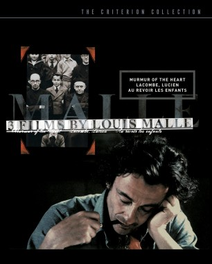 |
3 Films by Louis Malle | |||
| 672 |

|
3 Films by Roberto Rossellini Starring Ingrid Bergman | |||
| 528 | 3 Silent Classics by Josef von Sternberg | ||||
| 230 | 3 Women | Robert Altman | United States, | 1977 | |
| 418 |
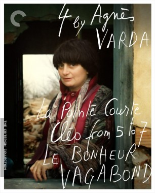 |
4 by Agnès Varda | |||
| 958 | 4 Months, 3 Weeks and 2 Days | Cristian Mungiu | Romania, | 2007 | |
| 140 |

|
8½ | Federico Fellini | Italy, | 1963 |
| 591 | 12 Angry Men | Sidney Lumet | United States, | 1957 | |
| 20th Century Women | Mike Mills | United States, | 2016 | ||
| 956 |
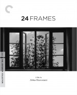 |
24 Frames | Abbas Kiarostami | Iran, | 2017 |
| 56 | The 39 Steps | Alfred Hitchcock | United Kingdom, | 1935 | |
| 861 | 45 Years | Andrew Haigh | United Kingdom, | 2015 | |
| 376 | 49th Parallel | Michael Powell | United Kingdom, | 1941 | |
| 71 Fragments of a Chronology of Chance | Michael Haneke | Germany, | 1994 | ||
| 900 | 100 Years of Olympic Films: 1912–2012 | ||||
| 5 | The 400 Blows | François Truffaut | France, | 1959 | |
| 984 | 1984 | Michael Radford | United Kingdom, | 1984 | |
| 2001: A Space Odyssey | Stanley Kubrick | United Kingdom, | 1968 | ||
| 2046 | Wong Kar Wai | Hong Kong, | 2004 | ||
| About Dry Grasses | Nuri Bilge Ceylan | Turkey, | 2023 | ||
| About Extra Hours and Volunteer Work | Sara Gómez | Cuba, | 1973 | ||
| Accattone | Pier Paolo Pasolini | Italy, | 1961 | ||
| 396 | Ace in the Hole | Billy Wilder | United States, | 1951 | |
| 1275 |
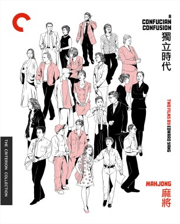 |
A Confucian Confusion / Mahjong: Two Films by Edward Yang | |||
| 912 |
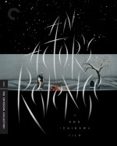 |
An Actor’s Revenge | Kon Ichikawa | Japan, | 1963 |
| Ådalen 31 | Bo Widerberg | Sweden, | 1969 | ||
| 1115 | Adoption | Márta Mészáros | Hungary, | 1975 | |
| 185 |
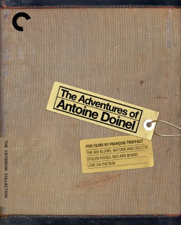 |
The Adventures of Antoine Doinel | |||
| 1166 | The Adventures of Baron Munchausen | Terry Gilliam | United Kingdom, | 1988 | |
| Adventures of Zatoichi | Kimiyoshi Yasuda | Japan, | 1964 | ||
| Affirmations | Marlon Riggs | United States, | 1990 | ||
| Afire | Christian Petzold | Germany, | 2023 | ||
| 1185 |
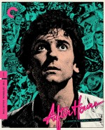 |
After Hours | Martin Scorsese | United States, | 1985 |
| 1089 | After Life | Hirokazu Kore-eda | Japan, | 1998 | |
| 1046 | After the Curfew | Usmar Ismail | Indonesia, | 1954 | |
| After the Rehearsal | Ingmar Bergman | Sweden, | 1984 | ||
| 913 | The Age of Innocence | Martin Scorsese | United States, | 1993 | |
| The Age of the Medici | Roberto Rossellini | Italy, | 1973 | ||
| Agnès de ci de là Varda | Agnès Varda | France, | 2011 | ||
| AK 100: 25 Films by Akira Kurosawa | |||||
| 842 | Akira Kurosawa’s Dreams | Akira Kurosawa | Japan, | 1990 | |
| 609 |
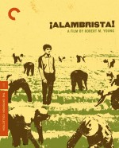 |
¡Alambrista! | Robert M. Young | United States, | 1977 |
| 87 | Alexander Nevsky | Sergei Eisenstein | Soviet Union, | 1938 | |
| Alex Wheatle | Steve McQueen | United Kingdom, | 2020 | ||
| 1318 |
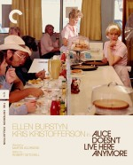 |
Alice Doesn’t Live Here Anymore | Martin Scorsese | United States, | 1974 |
| 814 | Alice in the Cities | Wim Wenders | Germany, | 1974 | |
| 198 | Ali: Fear Eats the Soul | Rainer Werner Fassbinder | Germany, | 1974 | |
| 1003 | All About Eve | Joseph L. Mankiewicz | United States, | 1950 | |
| 1012 | All About My Mother | Pedro Almodóvar | Spain, | 1999 | |
|
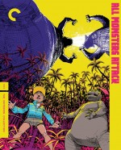 |
All Monsters Attack | Ishiro Honda | Japan, | 1969 | |
| All Night Long | Basil Dearden | United Kingdom, | 1962 | ||
| 1234 | All of Us Strangers | Andrew Haigh | United Kingdom, | 2023 | |
| All That Breathes | Shaunak Sen | United Kingdom, | 2022 | ||
| 95 | All That Heaven Allows | Douglas Sirk | United States, | 1955 | |
| 724 | All That Jazz | Bob Fosse | United States, | 1979 | |
| 214 | All That Money Can Buy (a.k.a. The Devil and Daniel Webster) | William Dieterle | United States, | 1941 | |
| 1210 | All the Beauty and the Bloodshed | Laura Poitras | United States, | 2022 | |
| All These Women | Ingmar Bergman | Sweden, | 1964 | ||
| All We Imagine as Light | Payal Kapadia | India, | 2024 | ||
| 25 | Alphaville | Jean-Luc Godard | France, | 1965 | |
| 1284 |
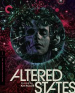 |
Altered States | Ken Russell | United States, | 1980 |
| 4 | Amarcord | Federico Fellini | Italy, | 1973 | |

|
America Lost and Found: The BBS Story | ||||
| 1324 | American Dream | Barbara Kopple | United States, | 1990 | |
| 793 | The American Friend | Wim Wenders | Germany, | 1977 | |
| The American Soldier | Rainer Werner Fassbinder | Germany, | 1970 | ||
| 817 | Le amiche | Michelangelo Antonioni | Italy, | 1955 | |
| El amor brujo | Carlos Saura | Spain, | 1986 | ||
| 1060 | Amores perros | Alejandro G. Iñárritu | Mexico, | 2000 | |
| 1218 | Anatomy of a Fall | Justine Triet | France, | 2023 | |
| 600 | Anatomy of a Murder | Otto Preminger | United States, | 1959 | |
| 617 | And Everything Is Going Fine | Steven Soderbergh | United States, | 2010 | |
| 77 | And God Created Woman | Roger Vadim | France, | 1956 | |
| 991 |
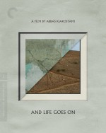 |
And Life Goes On | Abbas Kiarostami | Iran, | 1992 |

|
André Gregory & Wallace Shawn: 3 Films | ||||
| 34 | Andrei Rublev | Andrei Tarkovsky | Soviet Union, | 1966 | |
| Androcles and the Lion | Chester Erskine | United Kingdom, | 1952 | ||
| 282 | Andrzej Wajda: Three War Films | ||||
| . . . And the Pursuit of Happiness | Louis Malle | France, | 1986 | ||
| 50 |
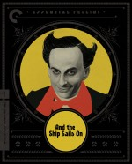 |
And the Ship Sails On | Federico Fellini | Italy, | 1983 |
| And . . . We’ve Got Sabor | Sara Gómez | Cuba, | 1967 | ||
| 301 | An Angel at My Table | Jane Campion | New Zealand, | 1990 | |
| 1259 | Anora | Sean Baker | United States, | 2024 | |
| Anselm | Wim Wenders | Germany, | 2023 | ||
| Anthem | Marlon Riggs | United States, | 1991 | ||
| 542 | Antichrist | Lars von Trier | Denmark, | 2009 | |
| 425 | Antonio Gaudí | Hiroshi Teshigahara | Japan, | 1984 | |
| 784 | Aparajito | Satyajit Ray | India, | 1956 | |
| Apart from You | Mikio Naruse | Japan, | 1933 | ||
| 785 | Apur Sansar | Satyajit Ray | India, | 1959 | |
| 782 |
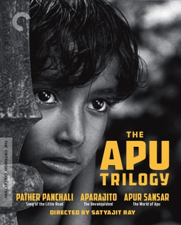 |
The Apu Trilogy | |||
| 634 | Arabian Nights | Pier Paolo Pasolini | Italy, | 1974 | |
| 886 | L’argent | Robert Bresson | France, | 1983 | |
| Ariel | Aki Kaurismäki | Finland, | 1988 | ||
| 40 | Armageddon | Michael Bay | United States, | 1998 | |
| Army | Keisuke Kinoshita | Japan, | 1944 | ||
| 385 | Army of Shadows | Jean-Pierre Melville | France, | 1969 | |
| 1153 | Arsenic and Old Lace | Frank Capra | United States, | 1944 | |
| 1063 | The Ascent | Larisa Shepitko | Soviet Union, | 1977 | |
| 285 | Ashes and Diamonds | Andrzej Wajda | Poland, | 1958 | |
| As Long as You’ve Got Your Health | Pierre Etaix | France, | 1966 | ||
| 847 | The Asphalt Jungle | John Huston | United States, | 1950 | |
| As Tears Go By | Wong Kar Wai | Hong Kong, | 1988 | ||
| L’Atalante | Jean Vigo | France, | 1934 | ||
| 366 | The Atomic Submarine | Spencer G. Bennet | United States, | 1959 | |
| 297 | Au hasard Balthazar | Robert Bresson | France, | 1966 | |
| 330 | Au revoir les enfants | Louis Malle | France, | 1987 | |
| 446 | An Autumn Afternoon | Yasujiro Ozu | Japan, | 1962 | |
| 60 | Autumn Sonata | Ingmar Bergman | Sweden, | 1978 | |
| 98 | L’avventura | Michelangelo Antonioni | Italy, | 1960 | |
| 917 | The Awful Truth | Leo McCarey | United States, | 1937 | |
| 914 | Baal | Volker Schlöndorff | West Germany, | 1970 | |
| 665 | Babette’s Feast | Gabriel Axel | Denmark, | 1987 | |

|
Babo 73 | Robert Downey Sr. | United States, | 1964 | |
| Baby Boy | John Singleton | United States, | 2001 | ||
| The Baby Carriage | Bo Widerberg | Sweden, | 1963 | ||
| 651 | Badlands | Terrence Malick | United States, | 1973 | |
| 319 | The Bad Sleep Well | Akira Kurosawa | Japan, | 1960 | |
| 303 | Bad Timing | Nicolas Roeg | United Kingdom, | 1980 | |
| 986 | The Baker’s Wife | Marcel Pagnol | France, | 1938 | |
| 343 | The Bakery Girl of Monceau | Eric Rohmer | France, | 1963 | |
| 148 | Ballad of a Soldier | Grigori Chukhrai | Soviet Union, | 1959 | |
| 940 | The Ballad of Gregorio Cortez | Robert M. Young | United States, | 1982 | |
| 645 | The Ballad of Narayama | Keisuke Kinoshita | Japan, | 1958 | |
| 1193 | La Bamba | Luis Valdez | United States, | 1987 | |
| 1019 | Bamboozled | Spike Lee | United States, | 2000 | |
| 174 | Band of Outsiders | Jean-Luc Godard | France, | 1964 | |
| 78 | The Bank Dick | Edward Cline | United States, | 1940 | |
| 807 | Barcelona | Whit Stillman | United States, | 1994 | |
| The Baron of Arizona | Samuel Fuller | United States, | 1950 | ||
| 897 | Barry Lyndon | Stanley Kubrick | United States, | 1975 | |
| 1260 | Basquiat | Julian Schnabel | United States, | 1996 | |
| 249 | The Battle of Algiers | Gillo Pontecorvo | Italy, | 1966 | |
| Baxter, Vera Baxter | Marguerite Duras | France, | 1977 | ||
| 715 | Bay of Angels | Jacques Demy | France, | 1963 | |
| The Beaches of Agnès | Agnès Varda | France, | 2008 | ||
| 361 | The Beales of Grey Gardens | Albert Maysles and David Maysles | United States, | 2006 | |
| The Beast | Bertrand Bonello | France, | 2023 | ||
| 100 | Beastie Boys Video Anthology | Various | United States, | 2000 | |
| 1091 | Beasts of No Nation | Cary Joji Fukunaga | United States, | 2015 | |
| 1280 | The Beat That My Heart Skipped | Jacques Audiard | France, | 2005 | |
| 580 | Le beau Serge | Claude Chabrol | France, | 1958 | |
| 1042 | Beau travail | Claire Denis | France, | 1999 | |
| 6 | Beauty and the Beast | Jean Cocteau | France, | 1946 | |
| 187 | Bed and Board | François Truffaut | France, | 1970 | |
| 859 | Before Midnight | Richard Linklater | United States, | 2013 | |
| 857 | Before Sunrise | Richard Linklater | United States, | 1995 | |
| 858 | Before Sunset | Richard Linklater | United States, | 2004 | |
| 436 | Before the Rain | Milcho Manchevski | Republic of Macedonia, | 1994 | |
| 856 | The Before Trilogy | ||||
| Beginners | Mike Mills | United States, | 2010 | ||
| 611 | Being John Malkovich | Spike Jonze | United States, | 1999 | |
| 864 | Being There | Hal Ashby | United States, | 1979 | |
| 593 | Belle de jour | Luis Buñuel | France, | 1967 | |
| Benny’s Video | Michael Haneke | Austria, | 1992 | ||
| 1170 | Bergman Island | Mia Hansen-Løve | France, | 2021 | |
| 477 | Bergman Island | Marie Nyreröd | Sweden, | 2006 | |
| 411 | Berlin Alexanderplatz | Rainer Werner Fassbinder | Germany, | 1980 | |
| 324 | La bête humaine | Jean Renoir | France, | 1938 | |
| 1002 | Betty Blue | Jean-Jacques Beineix | France, | 1986 | |
| Beware of a Holy Whore | Rainer Werner Fassbinder | Germany, | 1970 | ||
| 923 | Beyond the Hills | Cristian Mungiu | Romania, | 2012 | |
| Beyond the Law | Norman Mailer | United States, | 1968 | ||
| 836 | Beyond the Valley of the Dolls | Russ Meyer | United States, | 1970 | |
| 374 | Bicycle Thieves | Vittorio De Sica | Italy, | 1948 | |
| Il bidone | Federico Fellini | Italy, | 1955 | ||
| The Big Boss | Lo Wei | Hong Kong, | 1971 | ||
| 720 | The Big Chill | Lawrence Kasdan | United States, | 1983 | |
| 668 | The Big City | Satyajit Ray | India, | 1963 | |
| 113 | Big Deal on Madonna Street | Mario Monicelli | Italy, | 1958 | |
| 507 | Bigger Than Life | Nicholas Ray | United States, | 1956 | |
| 1269 | The Big Heat | Fritz Lang | United States, | 1953 | |
| 121 | Billy Liar | John Schlesinger | United Kingdom, | 1963 | |
| Bim, the Little Donkey | Albert Lamorisse | France, | 1951 | ||
| 1298 | Birth | Jonathan Glazer | United States, | 2004 | |
| 792 | Bitter Rice | Giuseppe De Santis | Italy, | 1949 | |
| 740 | The Bitter Tears of Petra von Kant | Rainer Werner Fassbinder | West Germany, | 1972 | |
| 852 | Black Girl | Ousmane Sembène | Senegal, | 1966 | |
| 1225 | Black God, White Devil | Glauber Rocha | Brazil, | 1964 | |
| Black Is . . . Black Ain’t | Marlon Riggs | United States, | 1995 | ||
| 571 | Black Moon | Louis Malle | France, | 1975 | |
| 93 | Black Narcissus | Michael Powell and Emeric Pressburger | United Kingdom, | 1947 | |
| 48 |
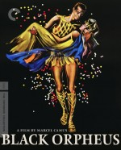 |
Black Orpheus | Marcel Camus | France, | 1959 |
| Black Panthers | Agnès Varda | France, | 1970 | ||
|
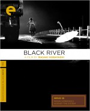 |
Black River | Masaki Kobayashi | Japan, | 1956 | |
| 765 | The Black Stallion | Carroll Ballard | United States, | 1979 | |
|
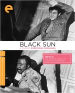 |
Black Sun | Koreyoshi Kurahara | Japan, | 1964 | |
| Blaise Pascal | Roberto Rossellini | Italy, | 1972 | ||
| 428 | Blast of Silence | Allen Baron | United States, | 1961 | |
| 772 | Blind Chance | Krzysztof Kieślowski | Poland, | 1981 | |
| 606 | Blithe Spirit | David Lean | United Kingdom, | 1945 | |
| 91 | The Blob | Irvin S. Yeaworth Jr. | United States, | 1958 | |
| 934 | Blonde Venus | Josef von Sternberg | United States, | 1932 | |
| 28 | Blood for Dracula | Paul Morrissey | United States, | 1974 | |
| 67 | The Blood of a Poet | Jean Cocteau | France, | 1930 | |
| 834 | Blood Simple | Joel Coen | United States, | 1984 | |
| Blood Wedding | Carlos Saura | Spain, | 1981 | ||
| 562 | Blow Out | Brian De Palma | United States, | 1981 | |
| 865 | Blow-Up | Michelangelo Antonioni | United Kingdom, | 1966 | |
|
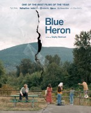 |
Blue Heron | Sophy Romvari | Canada, | 2025 | |
| 695 | Blue Is the Warmest Color | Abdellatif Kechiche | France, | 2013 | |
| 977 | Blue Velvet | David Lynch | United States, | 1986 | |
| 1113 | Boat People | Ann Hui | Hong Kong, | 1982 | |
| 150 |
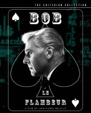 |
Bob le flambeur | Jean-Pierre Melville | France, | 1956 |
| 371 | Body and Soul | Oscar Micheaux | United States, | 1925 | |
| 1308 | Body Heat | Lawrence Kasdan | United States, | 1981 | |
| 420 | Le bonheur | Agnès Varda | France, | 1965 | |

|
Borderline | Kenneth Macpherson | United States, | 1930 | |
| 362 | Border Radio | Allison Anders, Dean Lent, and Kurt Voss | United States, | 1987 | |
| 1277 | Born in Flames | Lizzie Borden | United States, | 1983 | |
| 450 | Bottle Rocket | Wes Anderson | United States, | 1996 | |
| 305 |
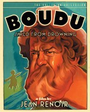 |
Boudu Saved from Drowning | Jean Renoir | France, | 1932 |
| 1220 | Bound | Lana Wachowski and Lilly Wachowski | United States, | 1996 | |
| 1189 | Bo Widerberg’s New Swedish Cinema | ||||
| 928 | Bowling for Columbine | Michael Moore | United States, | 2002 | |
| 839 | Boyhood | Richard Linklater | United States, | 2014 | |
| Boy Meets Girl | Leos Carax | France, | 1984 | ||
| Boyz n the Hood | John Singleton | United States, | 1991 | ||
| 38 | Branded to Kill | Seijun Suzuki | Japan, | 1967 | |
| 440 | Brand upon the Brain! | Guy Maddin | Canada, | 2006 | |
| 51 | Brazil | Terry Gilliam | United Kingdom, | 1985 | |
| 203 | The BRD Trilogy | ||||
| Bread and Alley | Abbas Kiarostami | Iran, | 1970 | ||
| 773 |
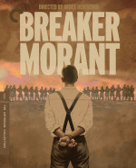 |
Breaker Morant | Bruce Beresford | Australia, | 1980 |
| 905 | The Breakfast Club | John Hughes | United States, | 1985 | |
| 889 | The Breaking Point | Michael Curtiz | United States, | 1950 | |
| 705 |
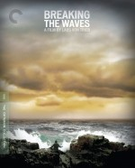 |
Breaking the Waves | Lars von Trier | Denmark, | 1996 |
| Breaktime | Abbas Kiarostami | Iran, | 1972 | ||
| 408 |
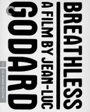 |
Breathless | Jean-Luc Godard | France, | 1960 |
| 763 | The Bridge | Bernhard Wicki | Germany, | 1959 | |
| 76 | Brief Encounter | David Lean | United Kingdom, | 1945 | |
| Brief Encounters | Kira Muratova | Ukraine, | 1967 | ||
| 1229 |
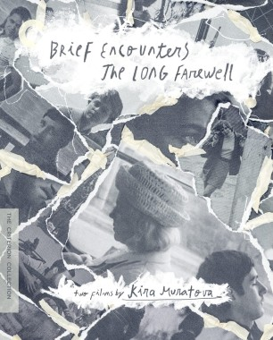 |
Brief Encounters / The Long Farewell: Two Films by Kira Muratova | |||
| 699 |
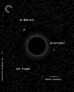 |
A Brief History of Time | Errol Morris | United States, | 1991 |
| 804 | A Brighter Summer Day | Edward Yang | Taiwan, | 1991 | |
| 1085 | Bringing Up Baby | Howard Hawks | United States, | 1938 | |
| Brink of Life | Ingmar Bergman | Sweden, | 1958 | ||
| 552 | Broadcast News | James L. Brooks | United States, | 1987 | |
| 777 | The Brood | David Cronenberg | Canada, | 1979 | |
| 294 | The Browning Version | Anthony Asquith | United Kingdom, | 1951 | |
| 1036 | Bruce Lee: His Greatest Hits | ||||
| 383 | Brute Force | Jules Dassin | United States, | 1947 | |
| Buchanan Rides Alone | Budd Boetticher | United States, | 1958 | ||
| 1140 | Buck and the Preacher | Sidney Poitier | United States, | 1972 | |
| 866 | Buena Vista Social Club | Wim Wenders | United States, | 1999 | |
| 936 | Bull Durham | Ron Shelton | United States, | 1988 | |
| 287 |
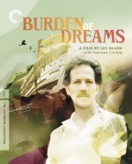 |
Burden of Dreams | Les Blank | United States, | 1982 |
| 379 | The Burmese Harp | Kon Ichikawa | Japan, | 1956 | |
| 789 | Burroughs: The Movie | Howard Brookner | United States, | 1983 | |
| 518 | By Brakhage: An Anthology, Volumes One and Two | ||||
| 184 | By Brakhage: An Anthology, Volume One | Stan Brakhage | United States, | ||
| 517 | By Brakhage: An Anthology, Volume Two | Stan Brakhage | United States, | ||
| Caesar and Cleopatra | Gabriel Pascal | United Kingdom, | 1945 | ||
| 671 | La Cage aux Folles | Edouard Molinaro | France, | 1978 | |
| 1273 | Cairo Station | Youssef Chahine | Egypt, | 1958 | |
| Calcutta | Louis Malle | France, | 1969 | ||
| 1033 | The Cameraman | Edward Sedgwick | United States, | 1928 | |
| 853 | Cameraperson | Kirsten Johnson | United States, | 2016 | |
| 862 | Canoa: A Shameful Memory | Felipe Cazals | Mexico, | 1976 | |
| 341 | A Canterbury Tale | Michael Powell and Emeric Pressburger | United Kingdom, | 1944 | |
| 633 | The Canterbury Tales | Pier Paolo Pasolini | Italy, | 1972 | |
| Capricious Summer | Jiří Menzel | Czechoslovakia, | 1968 | ||
| 1297 | Captain Blood | Michael Curtiz | United States, | 1935 | |
| 582 | Carlos | Olivier Assayas | Germany, | 2010 | |
| 128 | Carl Th. Dreyer—My Metier | Torben Skjødt Jensen | Denmark, | 1995 | |
| 124 |
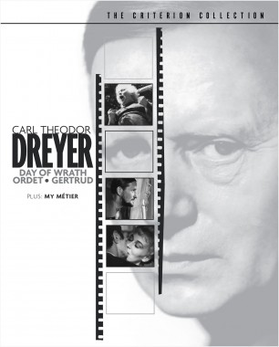 |
Carl Theodor Dreyer | |||
| Carmen | Carlos Saura | Spain, | 1983 | ||
| 1270 | Carnal Knowledge | Mike Nichols | United States, | 1971 | |
| 63 | Carnival of Souls | Herk Harvey | United States, | 1962 | |
| Cartesius | Roberto Rossellini | Italy, | 1974 | ||
| 270 | Casque d’or | Jacques Becker | France, | 1952 | |
| 833 | Cat People | Jacques Tourneur | United States, | 1942 | |
|
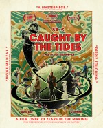 |
Caught by the Tides | Jia Zhang-Ke | China, | 2024 | |
| CC40 | |||||
| Ceddo | Ousmane Sembène | Senegal, | 1977 | ||
| 1108 |
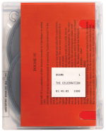 |
The Celebration | Thomas Vinterberg | Denmark, | 1998 |
| 1069 | Céline and Julie Go Boating | Jacques Rivette | France, | 1974 | |
| 218 | Le cercle rouge | Jean-Pierre Melville | France, | 1970 | |
| 1199 | La cérémonie | Claude Chabrol | France, | 1995 | |
| 893 |
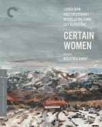 |
Certain Women | Kelly Reichardt | United States, | 2016 |
| 612 | Certified Copy | Abbas Kiarostami | Iran, | 2010 | |
| 884 | César | Marcel Pagnol | France, | 1936 | |
| Chafed Elbows | Robert Downey Sr. | United States, | 1966 | ||
| Chains | Raffaello Matarazzo | Italy, | 1949 | ||
| La chambre | Chantal Akerman | United States, | 1972 | ||
| 1124 | Chan Is Missing | Wayne Wang | United States, | 1982 | |
| 1203 | Chantal Akerman Masterpieces, 1968–1978 | ||||
| 57 |

|
Charade | Stanley Donen | United States, | 1963 |
| 669 | Charulata | Satyajit Ray | India, | 1964 | |
| 75 |
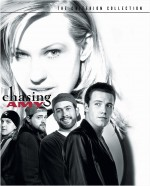 |
Chasing Amy | Kevin Smith | United States, | 1997 |
| 496 |
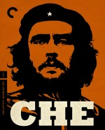 |
Che | Steven Soderbergh | France, | 2008 |
| 1145 | Chess of the Wind | Mohammad Reza Aslani | Iran, | 1976 | |
| 818 | La chienne | Jean Renoir | France, | 1931 | |
| 323 | The Children Are Watching Us | Vittorio De Sica | Italy, | 1944 | |
| 141 | Children of Paradise | Marcel Carné | France, | 1945 | |
| 1176 | Chilly Scenes of Winter | Joan Micklin Silver | United States, | 1979 | |
| 830 | Chimes at Midnight | Orson Welles | Spain, | 1966 | |
| Yam daabo | Idrissa Ouédraogo | Burkina Faso, | 1987 | ||
| 1256 | Choose Me | Alan Rudolph | United States, | 1984 | |
| 1067 | Chop Shop | Ramin Bahrani | United States, | 2007 | |
| The Chorus | Abbas Kiarostami | Iran, | 1982 | ||
| 1330 | Christiane F. | Uli Edel | Germany, | 1981 | |
| 492 | A Christmas Tale | Arnaud Desplechin | France, | 2008 | |
| 1043 | Christ Stopped at Eboli | Francesco Rosi | Italy, | 1979 | |
| 648 | Chronicle of a Summer | Jean Rouch and Edgar Morin | France, | 1961 | |
| Chronicle of the Years of Fire | Mohammed Lakhdar-Hamina | Algeria, | 1975 | ||
| 453 | Chungking Express | Wong Kar Wai | Hong Kong, | 1994 | |
| Le ciel est à vous | Jean Grémillon | France, | 1944 | ||
| 743 |
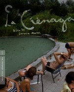 |
La Ciénaga | Lucrecia Martel | Argentina, | 2001 |
| 996 | The Circus | Charles Chaplin | United States, | 1928 | |
| Circus Angel | Albert Lamorisse | France, | 1965 | ||
| 1104 | Citizen Kane | Orson Welles | United States, | 1941 | |
| 680 |
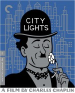 |
City Lights | Charles Chaplin | United States, | 1931 |
| 347 | Claire’s Knee | Eric Rohmer | France, | 1970 | |
| 434 | Classe tous risques | Claude Sautet | France, | 1960 | |
| 1052 | Claudine | John Berry | United States, | 1974 | |
| 354 | Clean, Shaven | Lodge Kerrigan | United States, | 1994 | |
| 73 | Cléo from 5 to 7 | Agnès Varda | France, | 1962 | |
| A Clockwork Orange | Stanley Kubrick | United Kingdom, | 1971 | ||
| 131 | Closely Watched Trains | Jiří Menzel | Czechoslovakia, | 1966 | |
| 519 | Close-up | Abbas Kiarostami | Iran, | 1990 | |
| Cloud | Kiyoshi Kurosawa | Japan, | 2024 | ||
| 993 | The Cloud-Capped Star | Ritwik Ghatak | India, | 1960 | |
| 822 | Clouds of Sils Maria | Olivier Assayas | France, | 2014 | |
| 997 | Cluny Brown | Ernst Lubitsch | United States, | 1946 | |
| C’mon C’mon | Mike Mills | United States, | 2021 | ||
| 780 | Code Unknown | Michael Haneke | France, | 2000 | |
| 1005 | Cold War | Paweł Pawlikowski | Poland, | 2018 | |
| 944 | Cold Water | Olivier Assayas | France, | 1994 | |
| 346 | La collectionneuse | Eric Rohmer | France, | 1967 | |
| Color Adjustment | Marlon Riggs | United States, | 1992 | ||
| 918 | The Color of Pomegranates | Sergei Parajanov | Soviet Union, | 1969 | |
|
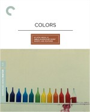 |
Colors | Abbas Kiarostami | Iran, | 1976 | |
| 511 | Colossal Youth | Pedro Costa | Portugal, | 2006 | |
| A Colt Is My Passport | Takashi Nomura | Japan, | 1967 | ||
| Comanche Station | Budd Boetticher | United States, | 1960 | ||
| 1035 | Come and See | Elem Klimov | Soviet Union, | 1985 | |
| Come On Children | Allan King | Canada, | 1972 | ||
| 1041 | The Comfort of Strangers | Paul Schrader | Italy, | 1990 | |
| 272 | La commare secca | Bernardo Bertolucci | Italy, | 1962 | |
| 1274 |
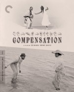 |
Compensation | Zeinabu irene Davis | United States, | 1999 |
| 729 |

|
The Complete Jacques Tati | |||
| 578 |

|
The Complete Jean Vigo | |||
|
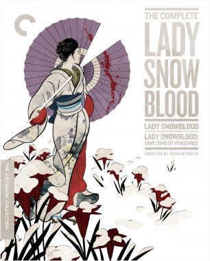 |
The Complete Lady Snowblood | ||||
| 167 |
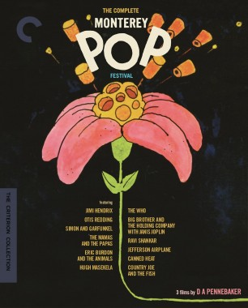 |
The Complete Monterey Pop Festival | |||
| 322 | The Complete Mr. Arkadin | Orson Welles | France, | 1955 | |
| 759 | The Confession | Costa-Gavras | Italy, | 1970 | |
| A Confucian Confusion | Edward Yang | Taiwan, | 1994 | ||
| 256 | A Constant Forge | Charles Kiselyak | United States, | 2000 | |
| 171 |
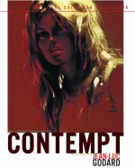 |
Contempt | Jean-Luc Godard | France, | 1963 |
| 1165 | Cooley High | Michael Schultz | United States, | 1975 | |
| 227 |
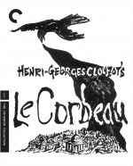 |
Le Corbeau | Henri-Georges Clouzot | France, | 1943 |
| 368 | Corridors of Blood | Robert Day | United States, | 1959 | |
| The Count of the Old Town | Edvin Adolphson and Sigurd Wallén | Sweden, | 1935 | ||
| 192 | Coup de grâce | Volker Schlöndorff | Germany, | 1976 | |
| 106 | Coup de torchon | Bertrand Tavernier | France, | 1981 | |
| 581 |
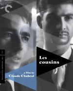 |
Les cousins | Claude Chabrol | France, | 1959 |
| 146 | The Cranes Are Flying | Mikhail Kalatozov | Soviet Union, | 1957 | |
| 1059 | Crash | David Cronenberg | Canada, | 1996 | |
| 295 | Crazed Fruit | Kô Nakahira | Japan, | 1956 | |
| Les créatures | Agnès Varda | France, | 1966 | ||
| 1023 | The Cremator | Juraj Herz | Czechoslovakia, | 1969 | |
| 403 | Cría cuervos . . . | Carlos Saura | Spain, | 1976 | |
| 101 | Cries and Whispers | Ingmar Bergman | Sweden, | 1972 | |
| Crisis | Ingmar Bergman | Sweden, | 1946 | ||
| 551 |
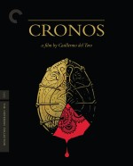 |
Cronos | Guillermo del Toro | Mexico, | 1993 |
| 1250 | Crossing Delancey | Joan Micklin Silver | United States, | 1988 | |
| Cruel Gun Story | Takumi Furukawa | Japan, | 1964 | ||
| 1321 |
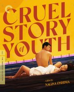 |
Cruel Story of Youth | Nagisa Oshima | Japan, | 1960 |
| 533 | Crumb | Terry Zwigoff | United States, | 1995 | |
| 1320 | The Crying Game | Neil Jordan | United Kingdom, | 1992 | |
| 577 |
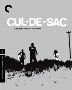 |
Cul-de-sac | Roman Polanski | United Kingdom, | 1966 |
| 1155 | Cure | Kiyoshi Kurosawa | Japan, | 1997 | |
| 476 | The Curious Case of Benjamin Button | David Fincher | United States, | 2008 | |
| 1138 | Daddy Longlegs | Josh Safdie and Benny Safdie | United States, | 2009 | |
| Daguerréotypes | Agnès Varda | France, | 1975 | ||
| 1157 | Daisies | Věra Chytilová | Czechoslovakia, | 1966 | |
| 183 | Les dames du Bois de Boulogne | Robert Bresson | France, | 1945 | |
| 1098 | The Damned | Luchino Visconti | Italy, | 1969 | |
| 1028 | Dance, Girl, Dance | Dorothy Arzner | United States, | 1940 | |
| 464 | Danton | Andrzej Wajda | France, | 1983 | |
| 540 | The Darjeeling Limited | Wes Anderson | United States, | 2007 | |
| 1294 |
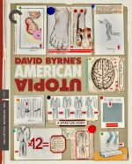 |
David Byrne’s American Utopia | Spike Lee | United States, | 2020 |
| David Golder | Julien Duvivier | France, | 1930 | ||
| 603 |

|
David Lean Directs Noël Coward | |||
| 895 | David Lynch: The Art Life | Jon Nguyen, Rick Barnes, and Olivia Neergaard-Holm | United States, | 2016 | |
| 769 | Day for Night | François Truffaut | France, | 1973 | |
| 746 | A Day in the Country | Jean Renoir | France, | 1936 | |
| 125 | Day of Wrath | Carl Th. Dreyer | Denmark, | 1943 | |
| 1328 | Days and Nights in the Forest | Satyajit Ray | India, | 1970 | |
| Days of Being Wild | Wong Kar Wai | Hong Kong, | 1990 | ||
| 409 |
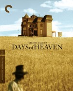 |
Days of Heaven | Terrence Malick | United States, | 1978 |
| 1001 | The Daytrippers | Greg Mottola | Canada, | 1996 | |
| 336 | Dazed and Confused | Richard Linklater | United States, | 1993 | |
| 919 | Dead Man | Jim Jarmusch | United States, | 1995 | |
| 21 | Dead Ringers | David Cronenberg | United States, | 1988 | |
| 1295 |
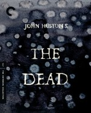 |
The Dead | John Huston | United Kingdom, | 1987 |
| 798 | Death by Hanging | Nagisa Oshima | Japan, | 1968 | |
| 962 | Death in Venice | Luchino Visconti | Italy, | 1971 | |
| 427 | Death of a Cyclist | Juan Antonio Bardem | Spain, | 1955 | |
| 632 | The Decameron | Pier Paolo Pasolini | Italy, | 1971 | |
|
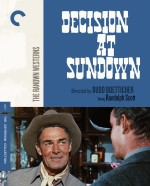 |
Decision at Sundown | Budd Boetticher | United States, | 1957 | |
| A Dedicated Life | Kazuo Hara | Japan, | 1994 | ||
| 1086 | Deep Cover | Bill Duke | United States, | 1992 | |
| 1285 | Deep Crimson | Arturo Ripstein | Mexico, | 1996 | |
| 1071 | Defending Your Life | Albert Brooks | United States, | 1991 | |
| 837 | Dekalog | Krzysztof Kieślowski | Poland, | 1988 | |
| 1309 | The Delta | Ira Sachs | United States, | 1996 | |
| 1237 | Demon Pond | Masahiro Shinoda | Japan, | 1979 | |
| 902 | Desert Hearts | Donna Deitch | United States, | 1985 | |
| 592 | Design for Living | Ernst Lubitsch | United States, | 1933 | |
| Désiré | Sacha Guitry | France, | 1937 | ||
| 1316 | Desperate Living | John Waters | United States, | 1977 | |
|
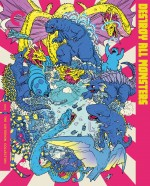 |
Destroy All Monsters | Ishiro Honda | Japan, | 1968 | |
| 1024 | Destry Rides Again | George Marshall | United States, | 1939 | |
| 966 | Detour | Edgar G. Ulmer | United States, | 1945 | |
| 448 | Le deuxième souffle | Jean-Pierre Melville | France, | 1966 | |
| 1102 | Devi | Satyajit Ray | India, | 1960 | |
| 1135 | Devil in a Blue Dress | Carl Franklin | United States, | 1995 | |
| 935 | The Devil Is a Woman | Josef von Sternberg | United States, | 1935 | |
| 666 | The Devil’s Backbone | Guillermo del Toro | Mexico, | 2001 | |
| The Devil’s Eye | Ingmar Bergman | Sweden, | 1960 | ||
| 871 | Dheepan | Jacques Audiard | France, | 2015 | |
| 35 |
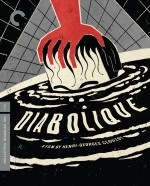 |
Diabolique | Henri-Georges Clouzot | France, | 1955 |
| 969 | Diamonds of the Night | Jan Němec | Czechoslovakia, | 1964 | |
| 117 | Diary of a Chambermaid | Luis Buñuel | France, | 1964 | |
| 222 | Diary of a Country Priest | Robert Bresson | France, | 1951 | |
| 1111 | Dick Johnson Is Dead | Kirsten Johnson | United States, | 2020 | |
| 930 |

|
Dietrich & von Sternberg in Hollywood | |||
| 506 | Dillinger Is Dead | Marco Ferreri | Italy, | 1969 | |
| 1188 | Dim Sum: A Little Bit of Heart | Wayne Wang | United States, | 1985 | |
| 102 | The Discreet Charm of the Bourgeoisie | Luis Buñuel | France, | 1972 | |
| 932 | Dishonored | Josef von Sternberg | United States, | 1931 | |
| 286 | Divorce Italian Style | Pietro Germi | Italy, | 1961 | |
| 531 | The Docks of New York | Josef von Sternberg | United States, | 1928 | |
| A Documentary About Transit | Sara Gómez | Cuba, | 1971 | ||
| Documenteur | Agnès Varda | France, | 1981 | ||
| 465 | Dodes’ka-den | Akira Kurosawa | Japan, | 1970 | |
| 1216 | Dogfight | Nancy Savoca | United States, | 1991 | |
| 733 | La dolce vita | Federico Fellini | Italy, | 1960 | |
| Dollar | Gustaf Molander | Sweden, | 1938 | ||
| 718 | Donkey Skin | Jacques Demy | France, | 1970 | |
| 786 | Dont Look Back | D. A. Pennebaker | United States, | 1967 | |
| 745 | Don’t Look Now | Nicolas Roeg | United Kingdom, | 1973 | |
| 1096 | Don’t Play Us Cheap | Melvin Van Peebles | United States, | 1972 | |
| The Doom Generation | Gregg Araki | United States, | 1995 | ||
| 1048 | Dos monjes | Juan Bustillo Oro | Mexico, | 1934 | |
| 97 | Do the Right Thing | Spike Lee | United States, | 1989 | |
| 1126 | Double Indemnity | Billy Wilder | United States, | 1944 | |
| 359 | The Double Life of Véronique | Krzysztof Kieślowski | France, | 1991 | |
| 104 | Double Suicide | Masahiro Shinoda | Japan, | 1969 | |
| Douce | Claude Autant-Lara | France, | 1943 | ||
| 447 | Le doulos | Jean-Pierre Melville | France, | 1962 | |
| 166 | Down by Law | Jim Jarmusch | United States, | 1986 | |
| 494 | Downhill Racer | Michael Ritchie | United States, | 1969 | |
| 1050 | Downpour | Bahram Beyzaie | Iran, | 1972 | |
| Dragnet Girl | Yasujiro Ozu | Japan, | 1933 | ||
| 937 | Dragon Inn | King Hu | Taiwan, | 1967 | |
| Dreams | Ingmar Bergman | Sweden, | 1955 | ||
| 770 | Dressed to Kill | Brian De Palma | United States, | 1980 | |
| 547 | Drive, He Said | Jack Nicholson | United States, | 1970 | |
| 1136 | Drive My Car | Ryusuke Hamaguchi | Japan, | 2021 | |
| 821 | Dr. Strangelove, or: How I Learned to Stop Worrying and Love the Bomb | Stanley Kubrick | United States, | 1964 | |
| 1251 | Drugstore Cowboy | Gus Van Sant | United States, | 1989 | |
| The Drum | Zoltán Korda | United Kingdom, | 1938 | ||
| 413 | Drunken Angel | Akira Kurosawa | Japan, | 1948 | |
| 1190 | Drylongso | Cauleen Smith | United States, | 1998 | |
| 688 | Dry Summer | Metin Erksan | Turkey, | 1964 | |
| 953 | A Dry White Season | Euzhan Palcy | United States, | 1989 | |
| Dying at Grace | Allan King | Canada, | 2003 | ||
| Early Spring | Yasujiro Ozu | Japan, | 1956 | ||
| 240 | Early Summer | Yasujiro Ozu | Japan, | 1951 | |
| 445 | The Earrings of Madame de . . . | Max Ophuls | France, | 1953 | |
| 1244 | Eastern Condors | Sammo Hung | Hong Kong, | 1987 | |
| 545 | Easy Rider | Dennis Hopper | United States, | 1969 | |
| 625 | Eating Raoul | Paul Bartel | United States, | 1982 | |
| Ebirah, Horror of the Deep | Jun Fukuda | Japan, | 1966 | ||
| Eclipse Series 10: Silent Ozu—Three Family Comedies | |||||

|
Eclipse Series 11: Larisa Shepitko | ||||
| Eclipse Series 12: Aki Kaurismäki’s Proletariat Trilogy | |||||
| Eclipse Series 13: Kenji Mizoguchi’s Fallen Women | |||||
| Eclipse Series 14: Rossellini’s History Films—Renaissance and Enlightenment | |||||
| Eclipse Series 15: Travels with Hiroshi Shimizu | |||||
| Eclipse Series 16: Alexander Korda’s Private Lives | |||||
| Eclipse Series 17: Nikkatsu Noir | |||||
| Eclipse Series 18: Dušan Makavejev—Free Radical | |||||
| Eclipse Series 19: Chantal Akerman in the Seventies | |||||
| Eclipse Series 1: Early Bergman | |||||
| Eclipse Series 20: George Bernard Shaw on Film | |||||
| Eclipse Series 21: Oshima’s Outlaw Sixties | |||||

|
Eclipse Series 22: Presenting Sacha Guitry | ||||
| Eclipse Series 23: The First Films of Akira Kurosawa | |||||
| Eclipse Series 24: The Actuality Dramas of Allan King | |||||
| Eclipse Series 25: Basil Dearden’s London Underground | |||||
| Eclipse Series 26: Silent Naruse | |||||
| Eclipse Series 27: Raffaello Matarazzo’s Runaway Melodramas | |||||
| Eclipse Series 28: The Warped World of Koreyoshi Kurahara | |||||
| Eclipse Series 29: Aki Kaurismäki’s Leningrad Cowboys | |||||
| Eclipse Series 2: The Documentaries of Louis Malle | |||||
| Eclipse Series 30: Sabu! | |||||

|
Eclipse Series 31: Three Popular Films by Jean-Pierre Gorin | ||||
| Eclipse Series 32: Pearls of the Czech New Wave | |||||
| Eclipse Series 33: Up All Night with Robert Downey Sr. | |||||
| Eclipse Series 34: Jean Grémillon During the Occupation | |||||
| Eclipse Series 35: Maidstone and Other Films by Norman Mailer | |||||
| Eclipse Series 36: Three Wicked Melodramas from Gainsborough Pictures | |||||

|
Eclipse Series 37: When Horror Came to Shochiku | ||||
| Eclipse Series 38: Masaki Kobayashi Against the System | |||||
| Eclipse Series 39: Early Fassbinder | |||||
| Eclipse Series 3: Late Ozu | |||||
| Eclipse Series 40: Late Ray | |||||
| Eclipse Series 41: Kinoshita and World War II | |||||
| Eclipse Series 42: Silent Ozu—Three Crime Dramas | |||||
| Eclipse Series 43: Agnès Varda in California | |||||
| Eclipse Series 44: Julien Duvivier in the Thirties | |||||
| Eclipse Series 45: Claude Autant-Lara—Four Romantic Escapes from Occupied France | |||||
| Eclipse Series 46: Ingrid Bergman’s Swedish Years | |||||
| Eclipse Series 47: Abbas Kiarostami—Early Shorts and Features | |||||
| Eclipse Series 48: Kinuyo Tanaka Directs | |||||
| Eclipse Series 4: Raymond Bernard | |||||
| Eclipse Series 5: The First Films of Samuel Fuller | |||||
| Eclipse Series 6: Carlos Saura’s Flamenco Trilogy | |||||
| Eclipse Series 7: Postwar Kurosawa | |||||
| Eclipse Series 8: Lubitsch Musicals | |||||
| Eclipse Series 9: The Delirious Fictions of William Klein | |||||
| 278 | L’eclisse | Michelangelo Antonioni | Italy, | 1962 | |
| Education | Steve McQueen | United Kingdom, | 2020 | ||
| 946 | Eight Hours Don’t Make a Day | Rainer Werner Fassbinder | Germany, | 1972 | |
| The Eight Mountains | Felix van Groeningen and Charlotte Vandermeersch | Italy, | 2022 | ||
| 86 | Eisenstein: The Sound Years | ||||
| 1289 | Él | Luis Buñuel | Mexico, | 1953 | |
| 904 | Election | Alexander Payne | United States, | 1999 | |
| 80 | The Element of Crime | Lars von Trier | Denmark, | 1984 | |
| 244 | Elena and Her Men | Jean Renoir | France, | 1956 | |
| Elephant Boy | Robert Flaherty and Zoltán Korda | United Kingdom, | 1937 | ||
| 1051 | The Elephant Man | David Lynch | United Kingdom, | 1980 | |
| 335 | Elevator to the Gallows | Louis Malle | France, | 1958 | |
| Elvira Madigan | Bo Widerberg | Sweden, | 1967 | ||
| 796 | The Emigrants | Jan Troell | Sweden, | 1971 | |
| The Emigrants/The New Land | |||||
| Emitaï | Ousmane Sembène | Senegal, | 1971 | ||
| 370 | The Emperor Jones | Dudley Murphy | United States, | 1933 | |
| The Emperor’s Naked Army Marches On | Kazuo Hara | Japan, | 1987 | ||
| 467 | Empire of Passion | Nagisa Oshima | Japan, | 1978 | |
| The End of Summer | Yasujiro Ozu | Japan, | 1961 | ||
| An Enemy of the People | Satyajit Ray | India, | 1989 | ||
| 534 | L’enfance nue | Maurice Pialat | France, | 1968 | |
| 398 | Les enfants terribles | Jean-Pierre Melville | France, | 1950 | |
| 1338 | The English Patient | Anthony Minghella | United States, | 1996 | |
| Enter the Dragon | Robert Clouse | Hong Kong, | 1973 | ||
| EO | Jerzy Skolimowski | Poland, | 2022 | ||
| Epidemic | Lars von Trier | Denmark, | 1987 | ||
| 338 | Equinox | Jack Woods | United States, | 1970 | |
| Equinox Flower | Yasujiro Ozu | Japan, | 1958 | ||
| 725 | Eraserhead | David Lynch | United States, | 1977 | |
| 1206 | Eric Rohmer’s Tales of the Four Seasons | ||||
| Essential Art House: 50 Years of Janus Films | |||||
| Essential Fellini | |||||
| 713 | The Essential Jacques Demy | ||||
| Ethnic Notions | Marlon Riggs | United States, | 1986 | ||
| 454 | Europa | Lars von Trier | Denmark, | 1991 | |
| 985 | Europa Europa | Agnieszka Holland | Poland, | 1990 | |
| 674 | Europe ’51 | Roberto Rossellini | Italy, | 1952 | |
| 520 | Everlasting Moments | Jan Troell | Sweden, | 2008 | |
| 744 | Every Man for Himself | Jean-Luc Godard | France, | 1980 | |

|
Every-Night Dreams | Mikio Naruse | Japan, | 1933 | |
| 1154 | Eve’s Bayou | Kasi Lemmons | United States, | 1997 | |
| Evil Does Not Exist | Ryusuke Hamaguchi | Japan, | 2023 | ||
| Excursion to Vueltabajo | Sara Gómez | Cuba, | 1965 | ||
| 840 | The Executioner | Luis García Berlanga | Spain, | 1963 | |
| Executioners | Johnnie To and Ching Siu-tung | Hong Kong, | 1993 | ||
| 1150 | Exotica | Atom Egoyan | Canada, | 1994 | |
| Experience | Abbas Kiarostami | Iran, | 1973 | ||
| 459 | The Exterminating Angel | Luis Buñuel | Mexico, | 1962 | |
| Extreme Private Eros: Love Song 1974 | Kazuo Hara | Japan, | 1974 | ||
| 1290 | Eyes Wide Shut | Stanley Kubrick | United Kingdom, | 1999 | |
| 260 | Eyes Without a Face | Georges Franju | France, | 1960 | |
| 1121 | Eyimofe (This Is My Desire) | Arie Esiri and Chuko Esiri | Nigeria, | 2020 | |
| 1017 | The Fabulous Baron Munchausen | Karel Zeman | Czechoslovakia, | 1962 | |
| 970 | A Face in the Crowd | Elia Kazan | United States, | 1957 | |
| 395 | The Face of Another | Hiroshi Teshigahara | Japan, | 1966 | |
| 252 | Faces | John Cassavetes | United States, | 1968 | |
| Faces Places | Agnès Varda and JR | France, | 2017 | ||
| 1011 | Fail Safe | Sidney Lumet | United States, | 1964 | |
| Fallen Angels | Wong Kar Wai | Hong Kong, | 1995 | ||
| 357 | The Fallen Idol | Carol Reed | United Kingdom, | 1948 | |
| The Fall of Otrar | Ardak Amirkulov | Kazakhstan, | 1991 | ||
| 451 | Fanfan la Tulipe | Christian-Jaque | France, | 1952 | |
| 883 | Fanny | Marc Allégret | France, | 1932 | |
| 261 | Fanny and Alexander | ||||
| 262 | Fanny and Alexander: Television Version | Ingmar Bergman | Sweden, | 1983 | |
| 263 | Fanny and Alexander: Theatrical Version | Ingmar Bergman | Sweden, | 1982 | |
| 700 | Fantastic Mr. Fox | Wes Anderson | United States, | 2009 | |
| 820 | Fantastic Planet | René Laloux | France, | 1973 | |
| 1128 | Farewell Amor | Ekwa Msangi | United States, | 2020 | |
| 1228 | Farewell My Concubine | Chen Kaige | China, | 1993 | |
| Fårö Document | Ingmar Bergman | Sweden, | 1970 | ||
| Fårö Document 1979 | Ingmar Bergman | Sweden, | 1979 | ||
| 1075 | Fast Times at Ridgemont High | Amy Heckerling | United States, | 1982 | |
| 259 | Fat Girl | Catherine Breillat | France, | 2001 | |
| 1141 | Faya dayi | Jessica Beshir | Ethiopia, | 2021 | |
| 175 | Fear and Loathing in Las Vegas | Terry Gilliam | United States, | 1998 | |
| Fearless Hyena II | Chan Chuen | Hong Kong, | 1983 | ||
| The Fearless Hyena | Jackie Chan | Hong Kong, | 1979 | ||
| 747 | Fellini Satyricon | Federico Fellini | Italy, | 1969 | |
| Fellow Citizen | Abbas Kiarostami | Iran, | 1983 | ||
| 929 | Female Trouble | John Waters | United States, | 1974 | |
| 892 | Festival | Murray Lerner | United States, | 1967 | |
| 288 | F for Fake | Orson Welles | United States, | 1975 | |
| 92 | Fiend Without a Face | Arthur Crabtree | United Kingdom, | 1958 | |
| 269 | Fighting Elegy | Seijun Suzuki | Japan, | 1966 | |
| Fight, Zatoichi, Fight | Kenji Misumi | Japan, | 1964 | ||
| 208 | A Film Trilogy by Ingmar Bergman | ||||
| 145 | The Firemen’s Ball | Miloš Forman | Czechoslovakia, | 1967 | |
| 378 | Fires on the Plain | Kon Ichikawa | Japan, | 1959 | |
| 430 | The Fire Within | Louis Malle | France, | 1963 | |
| First Case, Second Case | Abbas Kiarostami | Iran, | 1979 | ||
| First Graders | Abbas Kiarostami | Iran, | 1984 | ||
| 365 | First Man into Space | Robert Day | United States, | 1959 | |
| 764 | The Fisher King | Terry Gilliam | United States, | 1991 | |
| 42 | Fishing with John | John Lurie | United States, | 1992 | |
| 553 | Fish Tank | Andrea Arnold | United Kingdom, | 2009 | |
| Fist of Fury | Lo Wei | Hong Kong, | 1972 | ||
| 333 | Fists in the Pocket | Marco Bellocchio | Italy, | 1965 | |
| 546 | Five Easy Pieces | Bob Rafelson | United States, | 1970 | |
| 989 | The Flavor of Green Tea over Rice | Yasujiro Ozu | Japan, | 1952 | |
| 27 | Flesh for Frankenstein | Paul Morrissey | United States, | 1973 | |
| 1116 | The Flight of the Phoenix | Robert Aldrich | United States, | 1965 | |
| Floating Weeds | Yasujiro Ozu | Japan, | 1959 | ||
| 1278 | Flow | Gints Zilbalodis | Latvia, | 2024 | |
| 1077 | Flowers of Shanghai | Hou Hsiao-hsien | Taiwan, | 1998 | |
| 293 | The Flowers of St. Francis | Roberto Rossellini | Italy, | 1950 | |
| Flunky, Work Hard | Mikio Naruse | Japan, | 1931 | ||
| 638 | Following | Christopher Nolan | United Kingdom, | 1999 | |
| 54 | For All Mankind | Al Reinert | United States, | 1989 | |
| 318 | Forbidden Games | René Clément | France, | 1952 | |
| 696 | Foreign Correspondent | Alfred Hitchcock | United States, | 1940 | |
| Forever a Woman | Kinuyo Tanaka | Japan, | 1955 | ||
| 628 | The Forgiveness of Blood | Joshua Marston | United States, | 2011 | |
| 954 | Forty Guns | Samuel Fuller | United States, | 1957 | |
| 583 | The Four Feathers | Zoltán Korda | United Kingdom, | 1939 | |
| The Four Musketeers | Richard Lester | United Kingdom, | 1974 | ||
| 851 | Fox and His Friends | Rainer Werner Fassbinder | Germany, | 1975 | |
| 681 | Frances Ha | Noah Baumbach | United States, | 2013 | |
| 1332 | Frankenstein | Guillermo del Toro | United States, | 2025 | |
| Freaks | Tod Browning | United States, | 1932 | ||
| 1194 |

|
Freaks / The Unknown / The Mystic: Tod Browning’s Sideshow Shockers | |||
| 243 | French Cancan | Jean Renoir | France, | 1955 | |
| 1282 | The French Dispatch of the Liberty, Kansas Evening Sun | Wes Anderson | United States, | 2021 | |
| 768 | The French Lieutenant’s Woman | Karel Reisz | United Kingdom, | 1981 | |
| 1310 | Fresh Kill | Shu Lea Cheang | United Kingdom, | 1994 | |
| 703 | The Freshman | Sam Taylor and Fred Newmeyer | United States, | 1925 | |
| 475 | The Friends of Eddie Coyle | Peter Yates | United States, | 1973 | |
| From the Life of the Marionettes | Ingmar Bergman | Sweden, | 1980 | ||
| 1137 | Frownland | Ronald Bronstein | United States, | 2007 | |
| 515 | The Fugitive Kind | Sidney Lumet | United States, | 1960 | |
| Full Metal Jacket | Stanley Kubrick | United Kingdom, | 1987 | ||
| 1125 | The Funeral | Juzo Itami | Japan, | 1984 | |
| 975 | Funny Games | Michael Haneke | Austria, | 1997 | |
| 1240 | Funny Girl | William Wyler | United States, | 1968 | |
| 435 | The Furies | Anthony Mann | United States, | 1950 | |
| 627 | The Game | David Fincher | United States, | 1997 | |
| Game of Death | Robert Clouse | Hong Kong, | 1978 | ||
| 298 | Gate of Flesh | Seijun Suzuki | Japan, | 1964 | |
| 653 | Gate of Hell | Teinosuke Kinugasa | Japan, | 1953 | |
| 751 | Gates of Heaven | Errol Morris | United States, | 1978 | |
| Gates of Heaven/Vernon, Florida | |||||
| 463 | Il Generale Della Rovere | Roberto Rossellini | Italy, | 1959 | |
| 153 | General Idi Amin Dada: A Self-Portrait | Barbet Schroeder | France, | 1974 | |
| 283 | A Generation | Andrzej Wajda | Poland, | 1955 | |
| Genocide | Kazui Nihonmatsu | Japan, | 1968 | ||
| 152 | George Washington | David Gordon Green | United States, | 2000 | |
| 499 | Germany Year Zero | Roberto Rossellini | Italy, | 1948 | |
| 127 | Gertrud | Carl Th. Dreyer | Denmark, | 1964 | |
| Gervaise | René Clément | France, | 1956 | ||
| Ghidorah, the Three-Headed Monster | Ishiro Honda | Japan, | 1964 | ||
| 1057 | Ghost Dog: The Way of the Samurai | Jim Jarmusch | United States, | 1999 | |
| 872 | Ghost World | Terry Zwigoff | United States, | 2001 | |
| 795 | Gilda | Charles Vidor | United States, | 1946 | |
| 99 | Gimme Shelter | David Maysles, Albert Maysles, and Charlotte Zwerin | United States, | 1970 | |
| 1120 | The Girl Can’t Help It | Frank Tashlin | United States, | 1956 | |
| 1219 | Girlfight | Karyn Kusama | United States, | 2000 | |
| 1055 | Girlfriends | Claudia Weill | United States, | 1978 | |
| Girls of the Night | Kinuyo Tanaka | Japan, | 1961 | ||
| The Girls | Mai Zetterling | Sweden, | 1968 | ||
| The Gleaners and I | Agnès Varda | France, | 2000 | ||
| The Gleaners and I: Two Years Later | Agnès Varda | France, | 2002 | ||
| Godland | Hlynur Pálmason | Iceland, | 2022 | ||
| God’s Country | Louis Malle | United States, | 1985 | ||
| Gods of the Plague | Rainer Werner Fassbinder | Germany, | 1969 | ||
| 594 | Godzilla | Ishiro Honda | Japan, | 1954 | |
| Godzilla Raids Again | Motoyoshi Oda | Japan, | 1955 | ||
| 1000 | Godzilla: The Showa-Era Films, 1954–1975 | ||||
| 1254 | Godzilla vs. Biollante | Kazuki Omori | Japan, | 1989 | |
| Godzilla vs. Gigan | Jun Fukuda | Japan, | 1972 | ||
| Godzilla vs. Hedorah | Yoshimitsu Banno | Japan, | 1971 | ||
| Godzilla vs. Mechagodzilla | Jun Fukuda | Japan, | 1974 | ||
| Godzilla vs. Megalon | Jun Fukuda | Japan, | 1973 | ||
| Goke, Body Snatcher from Hell | Hajime Sato | Japan, | 1968 | ||
| 495 | The Golden Age of Television | United States, | |||
| 242 | The Golden Coach | Jean Renoir | France, | 1953 | |
| 615 | The Gold Rush | Charles Chaplin | United States, | 1942 | |
| 493 | Gomorrah | Matteo Garrone | Italy, | 2008 | |
| Goodbye CP | Kazuo Hara | Japan, | 1972 | ||
| 84 | Good Morning | Yasujiro Ozu | Japan, | 1959 | |
| The Gospel According to Matthew | Pier Paolo Pasolini | Italy, | 1964 | ||
| 800 | The Graduate | Mike Nichols | United States, | 1967 | |
| 924 | Graduation | Cristian Mungiu | Romania, | 2016 | |
| Le grand amour | Pierre Etaix | France, | 1969 | ||
| 1025 | The Grand Budapest Hotel | Wes Anderson | United States, | 2014 | |
| 1 | Grand Illusion | Jean Renoir | France, | 1937 | |
| 618 | Gray’s Anatomy | Steven Soderbergh | United States, | 1997 | |
| 702 | The Great Beauty | Paolo Sorrentino | Italy, | 2013 | |
| 565 | The Great Dictator | Charles Chaplin | United States, | 1940 | |
| 1027 | The Great Escape | John Sturges | United States, | 1963 | |
| 31 | Great Expectations | David Lean | United Kingdom, | 1946 | |
| 375 | Green for Danger | Sidney Gilliat | United Kingdom, | 1946 | |
| 1233 |

|
Gregg Araki’s Teen Apocalypse Trilogy | |||
| 123 | Grey Gardens | David Maysles, Albert Maysles, Ellen Hovde, and Muffie Meyer | United States, | 1975 | |
| 1246 | The Grifters | Stephen Frears | United States, | 1990 | |
| 1339 | Grizzly Man | Werner Herzog | United States, | 2005 | |
| Guanabacoa: Chronicle of My Family | Sara Gómez | Cuba, | 1966 | ||
| 1201 | Guillermo del Toro’s Pinocchio | Guillermo del Toro and Mark Gustafson | Mexico, | 2022 | |
| 1238 | Gummo | Harmony Korine | United States, | 1997 | |
| 1053 | The Gunfighter | Henry King | United States, | 1950 | |
| 381 | La haine | Mathieu Kassovitz | France, | 1995 | |
| 1315 | Hairspray | John Waters | United States, | 1988 | |
| Half a Loaf of Kung Fu | Chan Chi-hwa | Hong Kong, | 1978 | ||
| 82 | Hamlet | Laurence Olivier | United Kingdom, | 1948 | |
| 355 | Hands over the City | Francesco Rosi | Italy, | 1963 | |
| 1235 | Happiness | Todd Solondz | United States, | 1998 | |
| Happy Together | Wong Kar Wai | Hong Kong, | 1997 | ||
| 302 | Harakiri | Masaki Kobayashi | Japan, | 1962 | |
| 9 | Hard Boiled | John Woo | Hong Kong, | 1992 | |
| 711 | A Hard Day’s Night | Richard Lester | United Kingdom, | 1964 | |
| 83 | The Harder They Come | Perry Henzell | United States, | 1972 | |
| 334 | Harlan County USA | Barbara Kopple | United States, | 1976 | |
| 608 |

|
Harold and Maude | Hal Ashby | United States, | 1971 |
| 367 |

|
The Haunted Strangler | Robert Day | United States, | 1958 |
| 619 |

|
Le Havre | Aki Kaurismäki | France, | 2011 |

|
The Hawks and the Sparrows | Pier Paolo Pasolini | Italy, | 1966 | |
| 134 |

|
Häxan | Benjamin Christensen | Denmark, | 1922 |
| 544 |

|
Head | Bob Rafelson | United States, | 1968 |
| 846 |

|
Heart of a Dog | Laurie Anderson | United States, | 2015 |
| 156 |

|
Hearts and Minds | Peter Davis | United States, | 1974 |
| 291 |

|
Heaven Can Wait | Ernst Lubitsch | United States, | 1943 |
| 636 |

|
Heaven’s Gate | Michael Cimino | United States, | 1980 |
| 982 |

|
Hedwig and the Angry Inch | John Cameron Mitchell | United States, | 2001 |
| 974 |

|
The Heiress | William Wyler | United States, | 1949 |
| 1288 |

|
Hell’s Angels | Howard Hughes | United States, | 1930 |
| 41 |

|
Henry V | Laurence Olivier | United Kingdom, | 1944 |
| 819 |

|
Here Comes Mr. Jordan | Alexander Hall | United States, | 1941 |
| 766 |

|
Here Is Your Life | Jan Troell | Sweden, | 1966 |
| 911 |

|
The Hero | Satyajit Ray | India, | 1966 |

|
The Heroic Trio | Johnnie To | Hong Kong, | 1993 | |
| 116 |

|
The Hidden Fortress | Akira Kurosawa | Japan, | 1958 |
| 24 |

|
High and Low | Akira Kurosawa | Japan, | 1963 |
| 1314 |

|
High Art | Lisa Cholodenko | United States, | 1998 |
| 1099 |

|
High Sierra | Raoul Walsh | United States, | 1941 |
| 196 |

|
Hiroshima mon amour | Alain Resnais | France, | 1959 |
| 849 |

|
His Girl Friday | Howard Hawks | United States, | 1940 |
| 1072 |

|
History Is Made at Night | Frank Borzage | United States, | 1937 |
| 1283 |

|
A History of Violence | David Cronenberg | United States, | 2005 |
| 469 |

|
The Hit | Stephen Frears | United Kingdom, | 1984 |
| 461 |

|
Hobson’s Choice | David Lean | United Kingdom, | 1954 |
| 1009 |

|
Holiday | George Cukor | United States, | 1938 |
| 607 |

|
A Hollis Frampton Odyssey | Hollis Frampton | United States, | |
| 1173 |

|
Hollywood Shuffle | Robert Townsend | United States, | 1987 |

|
The Home and the World | Satyajit Ray | India, | 1984 | |

|
Homework | Abbas Kiarostami | Iran, | 1989 | |
| 486 |

|
Homicide | David Mamet | United States, | 1991 |
| 1304 |

|
A Man and a Woman | Claude Lelouch | France, | 1966 |
| 200 |

|
The Honeymoon Killers | Leonard Kastle | United States, | 1969 |
| 289 |

|
Hoop Dreams | Steve James | United States, | 1994 |
| 163 |

|
Hopscotch | Ronald Neame | United States, | 1980 |
| 154 |

|
The Horse’s Mouth | Ronald Neame | United Kingdom, | 1958 |
| 1139 |

|
Hôtel du Nord | Marcel Carné | France, | 1938 |

|
Hotel Monterey | Chantal Akerman | United States, | 1972 | |

|
Hour of the Wolf | Ingmar Bergman | Sweden, | 1968 | |
| 539 |

|
House | Nobuhiko Obayashi | Japan, | 1977 |
| 690 |

|
The Housemaid | Kim Ki-young | South Korea, | 1960 |
| 399 |

|
House of Games | David Mamet | United States, | 1987 |
| 1287 |

|
House Party | Reginald Hudlin | United States, | 1990 |
| 488 |

|
Howards End | James Ivory | United Kingdom, | 1992 |
| 120 |

|
How to Get Ahead in Advertising | Bruce Robinson | United Kingdom, | 1989 |
| 1319 |

|
Hud | Martin Ritt | United States, | 1963 |

|
Humain, trop humain | Louis Malle | France, | 1973 | |
| 480 |

|
The Human Condition | Masaki Kobayashi | Japan, | 1959 |
| 981 |

|
L’humanité | Bruno Dumont | France, | 1999 |
| 504 |

|
Hunger | Steve McQueen | Ireland, | 2008 |
| 1029 |

|
Husbands | John Cassavetes | United States, | 1970 |
| 1214 |

|
I Am Cuba | Mikhail Kalatozov | Cuba, | 1964 |
| 181 |

|
I Am Curious—Blue | Vilgot Sjöman | Sweden, | 1967 |
| 179 |

|
I Am Curious | |||
| 180 |

|
I Am Curious—Yellow | Vilgot Sjöman | Sweden, | 1967 |

|
I Am Waiting | Koreyoshi Kurahara | Japan, | 1957 | |
| 426 |

|
The Ice Storm | Ang Lee | United States, | 1997 |
| 906 |

|
I, Daniel Blake | Ken Loach | United Kingdom, | 2016 |
| 585 |

|
Identification of a Woman | Michelangelo Antonioni | Italy, | 1982 |

|
The Idiot | Akira Kurosawa | Japan, | 1951 | |
| 391 |

|
If.... | Lindsay Anderson | United Kingdom, | 1969 |
| 195 |

|
I fidanzati | Ermanno Olmi | Italy, | 1962 |

|
I Hate But Love | Koreyoshi Kurahara | Japan, | 1962 | |
| 221 |

|
Ikiru | Akira Kurosawa | Japan, | 1952 |
| 801 |

|
I Knew Her Well | Antonio Pietrangeli | Italy, | 1965 |
| 94 |

|
I Know Where I’m Going! | Michael Powell and Emeric Pressburger | United Kingdom, | 1945 |

|
I Live in Fear | Akira Kurosawa | Japan, | 1955 | |

|
I’ll Go to Santiago | Sara Gómez | Cuba, | 1964 | |
| 676 |

|
I Married a Witch | René Clair | United States, | 1942 |
| 1167 |

|
Imitation of Life | John M. Stahl | United States, | 1934 |
| 831 |

|
The Immortal Story | Orson Welles | France, | 1968 |
| 158 |

|
The Importance of Being Earnest | Anthony Asquith | United Kingdom, | 1952 |
| 810 |

|
In a Lonely Place | Nicholas Ray | United States, | 1950 |
| 781 |

|
In Cold Blood | Richard Brooks | United States, | 1967 |
| 1100 |

|
The Incredible Shrinking Man | Jack Arnold | United States, | 1957 |

|
India Song | Marguerite Duras | France, | 1975 | |
| 202 |

|
Indiscretion of an American Wife | Vittorio De Sica | United States, | 1953 |

|
Infernal Affairs | Andrew Lau Wai-keung and Alan Mak | Hong Kong, | 2002 | |

|
Infernal Affairs II | Andrew Lau Wai-keung and Alan Mak | Hong Kong, | 2003 | |

|
Infernal Affairs III | Andrew Lau Wai-keung and Alan Mak | Hong Kong, | 2003 | |

|
Ingmar Bergman’s Cinema | ||||
| 828 |

|
Ingrid Bergman: In Her Own Words | Stig Björkman | Sweden, | 2015 |

|
The Inheritance | Masaki Kobayashi | Japan, | 1962 | |
| 1175 |

|
Inland Empire | David Lynch | United States, | 2006 |
| 988 |

|
The Inland Sea | Lucille Carra | United States, | 1991 |
| 823 |

|
The In-Laws | Arthur Hiller | United States, | 1979 |

|
Innocence Unprotected | Dušan Makavejev | Yugoslavia, | 1968 | |

|
The Innocent | Louis Garrel | France, | 2022 | |
| 727 |

|
The Innocents | Jack Clayton | United States, | 1961 |
| 473 |

|
The Insect Woman | Shohei Imamura | Japan, | 1963 |
| 874 |

|
Insiang | Lino Brocka | Philippines, | 1976 |
| 794 |

|
Inside Llewyn Davis | Joel Coen and Ethan Coen | United States, | 2013 |
| 566 |

|
Insignificance | Nicolas Roeg | United Kingdom, | 1985 |
| 47 |

|
Insomnia | Erik Skjoldbjærg | Norway, | 1997 |
| 474 |

|
Intentions of Murder | Shohei Imamura | Japan, | 1964 |

|
Intermezzo | Gustaf Molander | Sweden, | 1936 | |

|
Intervista | Federico Fellini | Italy, | 1987 | |
| 959 |

|
In the Heat of the Night | Norman Jewison | United States, | 1967 |
| 147 | In the Mood for Love | Wong Kar Wai | Hong Kong, | 2000 | |
| 466 |

|
In the Realm of the Senses | Nagisa Oshima | Japan, | 1976 |

|
Intimidation | Koreyoshi Kurahara | Japan, | 1960 | |
| 510 |

|
In Vanda’s Room | Pedro Costa | Portugal, | 2000 |

|
Invasion of Astro-Monster | Ishiro Honda | Japan, | 1965 | |
| 1016 |

|
Invention for Destruction | Karel Zeman | Czechoslovakia, | 1958 |
| 682 |

|
Investigation of a Citizen Above Suspicion | Elio Petri | Italy, | 1970 |
| 604 |

|
In Which We Serve | David Lean and Noël Coward | United Kingdom, | 1942 |
| 1058 |

|
The Irishman | Martin Scorsese | United States, | 2019 |
| 1074 |

|
Irma Vep | Olivier Assayas | France, | 1996 |

|
I Shot Jesse James | Samuel Fuller | United States, | 1949 | |

|
An Island for Miguel | Sara Gómez | Cuba, | 1968 | |
| 586 |

|
Island of Lost Souls | Erle C. Kenton | United States, | 1932 |
| 1281 |

|
Isle of Dogs | Wes Anderson | United States, | 2018 |
| 736 |

|
It Happened One Night | Frank Capra | United States, | 1934 |
| 692 |

|
It’s a Mad, Mad, Mad, Mad World | Stanley Kramer | United States, | 1963 |
| 1317 |

|
It Was Just an Accident | Jafar Panahi | Iran, | 2025 |
| 397 |

|
Ivan’s Childhood | Andrei Tarkovsky | Soviet Union, | 1962 |
| 88 |

|
Ivan the Terrible, Part I | Sergei Eisenstein | Soviet Union, | 1944 |
| 88 |

|
Ivan the Terrible, Part II | Sergei Eisenstein | Soviet Union, | 1958 |
| 246 |

|
I vitelloni | Federico Fellini | Italy, | 1953 |

|
I Walked with a Zombie | Jacques Tourneur | United States, | 1943 | |
| 1236 |

|
I Walked with a Zombie / The Seventh Victim: Produced by Val Lewton | |||
| 967 |

|
I Wanna Hold Your Hand | Robert Zemeckis | United States, | 1978 |

|
I Was Born, But . . . | Yasujiro Ozu | Japan, | 1932 | |

|
I Will Buy You | Masaki Kobayashi | Japan, | 1956 | |
| 903 |

|
Jabberwocky | Terry Gilliam | United Kingdom, | 1977 |
| 1197 |

|
Jackie Chan: Emergence of a Superstar | |||

|
Jacquot de Nantes | Agnès Varda | France, | 1991 | |

|
Jane B. par Agnès V. | Agnès Varda | France, | 1988 | |

|
Japanese Girls at the Harbor | Hiroshi Shimizu | Japan, | 1933 | |

|
Japanese Summer: Double Suicide | Nagisa Oshima | Japan, | 1967 | |
| 968 |

|
Japón | Carlos Reygadas | Mexico, | 2002 |

|
Jean de Florette | Claude Berri | France, | 1986 | |
| 1257 |

|
Jean de Florette / Manon of the Spring: Two Films by Claude Berri | |||
| 484 |

|
Jeanne Dielman, 23, quai du Commerce, 1080 Bruxelles | Chantal Akerman | France, | 1975 |
| 787 |

|
Jellyfish Eyes | Takashi Murakami | Japan, | 2013 |

|
Jericho | Thornton Freeland | United Kingdom, | 1937 | |

|
La Jetée | Chris Marker | France, | 1963 | |
| 387 |

|
La Jetée/Sans Soleil | |||

|
Je tu il elle | Chantal Akerman | Belgium, | 1975 | |
| 352 |

|
Jigoku | Nobuo Nakagawa | Japan, | 1960 |
| 169 |

|
Jimi Plays Monterey & Shake! Otis at Monterey | D. A. Pennebaker and Chris Hegedus | United States, | 1986 |
| 250 |

|
John Cassavetes: Five Films | |||
| 1307 |

|
John Singleton’s Hood Trilogy | |||
| 1247 |

|
Jo Jo Dancer, Your Life Is Calling | Richard Pryor | United States, | 1986 |

|
The Joke | Jaromil Jireš | Czechoslovakia, | 1969 | |
| 730 |

|
Jour de fête | Jacques Tati | France, | 1949 |
| 675 |

|
Journey to Italy | Roberto Rossellini | Italy, | 1954 |
| 1015 |

|
Journey to the Beginning of Time | Karel Zeman | Czechoslovakia, | 1955 |

|
Le jour se lève | Marcel Carné | France, | 1939 | |
| 656 |

|
Jubal | Delmer Daves | United States, | 1956 |

|
Jubilation Street | Keisuke Kinoshita | Japan, | 1944 | |
| 191 |

|
Jubilee | Derek Jarman | United Kingdom, | 1978 |
| 710 |

|
Judex | Georges Franju | France, | 1963 |
| 281 |

|
Jules and Jim | François Truffaut | France, | 1962 |
| 149 |

|
Juliet of the Spirits | Federico Fellini | Italy, | 1965 |

|
June Night | Per Lindberg | Sweden, | 1940 | |

|
Jungle Book | Zoltán Korda | United Kingdom, | 1942 | |
| 267 |

|
Kagemusha | Akira Kurosawa | Japan, | 1980 |
| 1148 |

|
Kalpana | Uday Shankar | India, | 1948 |
| 908 |

|
Kameradschaft | G. W. Pabst | Germany, | 1931 |
| 284 |

|
Kanal | Andrzej Wajda | Poland, | 1957 |

|
Kapò | Gillo Pontecorvo | Italy, | 1959 | |

|
Katzelmacher | Rainer Werner Fassbinder | Germany, | 1969 | |
| 808 |

|
The Kennedy Films of Robert Drew & Associates | Robert Drew | United States, | |
| 561 |

|
Kes | Ken Loach | United Kingdom, | 1970 |
| 349 |

|
Kicking and Screaming | Noah Baumbach | United States, | 1995 |
| 799 |

|
The Kid | Charles Chaplin | United States, | 1921 |
| 964 |

|
The Kid Brother | Ted Wilde | United States, | 1927 |
| 646 |

|
The Kid with a Bike | Jean-Pierre Dardenne and Luc Dardenne | Belgium, | 2011 |
| 313 |

|
Kill! | Kihachi Okamoto | Japan, | 1968 |
| 8 |

|
The Killer | John Woo | Hong Kong, | 1989 |
| 1262 |

|
Killer of Sheep | Charles Burnett | United States, | 1977 |
| 176 |

|
The Killers | |||

|
The Killers | Don Siegel | United States, | 1964 | |

|
The Killers | Robert Siodmak | United States, | 1946 | |

|
Killer’s Kiss | Stanley Kubrick | United States, | 1955 | |
| 1302 |

|
Killers of the Flower Moon | Martin Scorsese | United States, | 2023 |
| 575 |

|
The Killing | Stanley Kubrick | United States, | 1956 |
| 254 |

|
The Killing of a Chinese Bookie | John Cassavetes | United States, | 1976 |
| 325 |

|
Kind Hearts and Coronets | Robert Hamer | United Kingdom, | 1949 |

|
King Kong vs. Godzilla | Japan, | 1963 | ||
| 1249 |

|
King Lear | Jean-Luc Godard | United States, | 1987 |
| 915 |

|
King of Jazz | John Murray Anderson | United States, | 1930 |
| 266 |

|
The King of Kings | Cecil B. DeMille | United States, | 1927 |
| 550 |

|
The King of Marvin Gardens | Bob Rafelson | United States, | 1972 |
| 698 |

|
King of the Hill | Steven Soderbergh | United States, | 1993 |
| 816 |

|
Kings of the Road | Wim Wenders | Germany, | 1976 |
| 568 |

|
Kiss Me Deadly | Robert Aldrich | United States, | 1955 |
| 1299 |

|
Kiss of the Spider Woman | Héctor Babenco | United States, | 1985 |
| 987 |

|
Klute | Alan J. Pakula | United States, | 1971 |
| 215 |

|
Knife in the Water | Roman Polanski | Poland, | 1962 |
| 340 |

|
Koko: A Talking Gorilla | Barbet Schroeder | France, | 1978 |
| 640 |

|
Koyaanisqatsi | Godfrey Reggio | United States, | 1983 |
| 1333 |

|
KPop Demon Hunters | Maggie Kang and Chris Appelhans | United States, | 2025 |

|
Kummatty | G. Aravindan | India, | 1979 | |

|
Kung-Fu Master! | Agnès Varda | France, | 1988 | |
| 584 |

|
Kuroneko | Kaneto Shindo | Japan, | 1968 |
| 90 |

|
Kwaidan | Masaki Kobayashi | Japan, | 1965 |
| 329 |

|
Lacombe, Lucien | Louis Malle | France, | 1974 |
| 103 |

|
The Lady Eve | Preston Sturges | United States, | 1941 |
| 790 |

|
Lady Snowblood | Toshiya Fujita | Japan, | 1973 |
| 791 |

|
Lady Snowblood: Love Song of Vengeance | Toshiya Fujita | Japan, | 1974 |
| 3 |

|
The Lady Vanishes | Alfred Hitchcock | United Kingdom, | 1938 |

|
Land of Milk and Honey | Pierre Étaix | France, | 1971 | |
| 1168 |

|
Lars von Trier’s Europe Trilogy | |||
| 530 |

|
The Last Command | Josef von Sternberg | United States, | 1928 |
| 485 |

|
The Last Days of Disco | Whit Stillman | United States, | 1998 |
| 422 |

|
The Last Emperor | Bernardo Bertolucci | China, | 1987 |

|
Last Holiday | Henry Cass | United Kingdom, | 1950 | |
| 1174 |

|
Last Hurrah for Chivalry | John Woo | Hong Kong, | 1979 |
| 462 |

|
The Last Metro | François Truffaut | France, | 1980 |
| 549 |

|
The Last Picture Show | Peter Bogdanovich | United States, | 1971 |

|
Last Summer | Catherine Breillat | France, | 2023 | |
| 70 |

|
The Last Temptation of Christ | Martin Scorsese | United States, | 1988 |
| 1118 |

|
The Last Waltz | Martin Scorsese | United States, | 1978 |
| 142 |

|
The Last Wave | Peter Weir | Australia, | 1977 |
| 478 |

|
Last Year at Marienbad | Alain Resnais | France, | 1961 |

|
Late Autumn | Yasujiro Ozu | Japan, | 1960 | |
| 331 |

|
Late Spring | Yasujiro Ozu | Japan, | 1949 |
| 878 |

|
Law of the Border | Lütfi Ö. Akad | Turkey, | 1966 |

|
Le 15/8 | Chantal Akerman and Samy Szlingerbaum | Belgium, | 1973 | |

|
The League of Gentlemen | Basil Dearden | United Kingdom, | 1960 | |
| 1107 |

|
The Learning Tree | Gordon Parks | United States, | 1969 |
| 1020 |

|
Leave Her to Heaven | John M. Stahl | United States, | 1945 |

|
L’enfant aimé ou Je joue à être une femme mariée | Chantal Akerman | Belgium, | 1971 | |

|
Leningrad Cowboys Go America | Aki Kaurismäki | Finland, | 1989 | |

|
Leningrad Cowboys Meet Moses | Aki Kaurismäki | Finland, | 1994 | |
| 1312 |

|
Lenny | Bob Fosse | United States, | 1974 |
| 572 |

|
Léon Morin, Priest | Jean-Pierre Melville | France, | 1961 |
| 235 |

|
The Leopard | Luchino Visconti | Italy, | 1963 |
| 737 |

|
Les Blank: Always for Pleasure | Les Blank | United States, | 1968 |

|
A Lesson in Love | Ingmar Bergman | Sweden, | 1954 | |
| 601 |

|
Letter Never Sent | Mikhail Kalatozov | Soviet Union, | 1959 |
| 508 |

|
Letters from Fontainhas: Three Films by Pedro Costa | |||
| 976 |

|
Let the Sunshine In | Claire Denis | France, | 2017 |

|
Lettres d’amour | Claude Autant-Lara | France, | 1942 | |
| 173 |

|
The Life and Death of Colonel Blimp | Michael Powell and Emeric Pressburger | United Kingdom, | 1943 |
| 300 |

|
The Life Aquatic with Steve Zissou | Wes Anderson | United States, | 2004 |
| 574 |

|
Life During Wartime | Todd Solondz | United States, | 2010 |
| 659 |

|
Life Is Sweet | Mike Leigh | United Kingdom, | 1990 |
| 664 |

|
The Life of Oharu | Kenji Mizoguchi | Japan, | 1952 |
| 708 |

|
Like Someone in Love | Abbas Kiarostami | Japan, | 2012 |
| 756 |

|
Limelight | Charles Chaplin | United States, | 1952 |
| 877 |

|
Limite | Mário Peixoto | Brazil, | 1931 |

|
Lions Love (. . . and Lies) | Agnès Varda | France, | 1969 | |
| 1323 |

|
Little Odessa | James Gray | United States, | 1994 |

|
The Living Magoroku | Keisuke Kinoshita | Japan, | 1943 | |

|
The Living Skeleton | Hiroshi Matsuno | Japan, | 1968 | |
| 1156 |

|
La Llorona | Jayro Bustamante | Guatemala, | 2019 |
| 994 |

|
Local Hero | Bill Forsyth | United Kingdom, | 1983 |

|
Local Power, Popular Power | Sara Gómez | Cuba, | 1970 | |
| 885 |

|
The Lodger: A Story of the London Fog | Alfred Hitchcock | United Kingdom, | 1927 |
| 206 |

|
Lola | Rainer Werner Fassbinder | West Germany, | 1981 |
| 714 |

|
Lola | Jacques Demy | France, | 1961 |
| 503 |

|
Lola Montès | Max Ophuls | Germany, | 1955 |

|
Lolita | Stanley Kubrick | United Kingdom, | 1962 | |
| 623 |

|
Lonesome | Paul Fejos | United States, | 1928 |
| 1202 |

|
Lone Star | John Sayles | United States, | 1996 |
| 841 |

|
Lone Wolf and Cub | |||

|
Lone Wolf and Cub: Baby Cart at the River Styx | Kenji Misumi | Japan, | 1972 | |

|
Lone Wolf and Cub: Baby Cart in Peril | Buichi Saito | Japan, | 1972 | |

|
Lone Wolf and Cub: Baby Cart in the Land of Demons | Kenji Misumi | Japan, | 1973 | |

|
Lone Wolf and Cub: Baby Cart to Hades | Kenji Misumi | Japan, | 1972 | |

|
Lone Wolf and Cub: Sword of Vengeance | Kenji Misumi | Japan, | 1972 | |

|
Lone Wolf and Cub: White Heaven in Hell | Yoshiyuki Kuroda | Japan, | 1974 | |
| 694 |

|
The Long Day Closes | Terence Davies | United Kingdom, | 1992 |

|
The Long Farewell | Kira Muratova | Ukraine, | 1971 | |
| 26 |

|
The Long Good Friday | John Mackenzie | United Kingdom, | 1980 |
| 43 |

|
Lord of the Flies | Peter Brook | United Kingdom, | 1963 |
| 1152 |

|
Lost Highway | David Lynch | United States, | 1997 |
| 177 |

|
The Lost Honor of Katharina Blum | Volker Schlöndorff and Margarethe von Trotta | Germany, | 1975 |
| 887 |

|
Lost in America | Albert Brooks | United States, | 1985 |
| 532 |

|
Louie Bluie | Terry Zwigoff | United States, | 1985 |
| 1114 |

|
Love Affair | Leo McCarey | United States, | 1939 |

|
Love Affair, or the Case of the Missing Switchboard Operator | Dušan Makavejev | Yugoslavia, | 1967 | |
| 1097 |

|
Love & Basketball | Gina Prince-Bythewood | United States, | 2000 |
| 348 |

|
Love in the Afternoon | Eric Rohmer | France, | 1972 |

|
Love Is Colder Than Death | Rainer Werner Fassbinder | Germany, | 1969 | |
| 1117 |

|
love jones | Theodore Witcher | United States, | 1997 |

|
Love Letter | Kinuyo Tanaka | Japan, | 1953 | |

|
Love Meetings | Pier Paolo Pasolini | Italy, | 1964 | |
| 188 |

|
Love on the Run | François Truffaut | France, | 1979 |

|
The Love Parade | Ernst Lubitsch | United States, | 1929 | |
| 429 |

|
The Lovers | Louis Malle | France, | 1958 |

|
The Lovers on the Bridge | Leos Carax | France, | 1991 | |

|
Lovers Rock | Steve McQueen | United Kingdom, | 2020 | |
| 144 |

|
Loves of a Blonde | Miloš Forman | Czechoslovakia, | 1965 |
| 721 |

|
Love Streams | John Cassavetes | United States, | 1984 |

|
The Love That Remains | Hlynur Pálmason | Iceland, | 2025 | |

|
Love Under the Crucifix | Kinuyo Tanaka | Japan, | 1962 | |

|
Loving Couples | Mai Zetterling | Sweden, | 1964 | |
| 239 |

|
The Lower Depths | |||

|
The Lower Depths | Jean Renoir | France, | 1936 | |

|
The Lower Depths | Akira Kurosawa | Japan, | 1957 | |
| 1045 |

|
Lucía | Humberto Solás | Cuba, | 1968 |

|
Lumière d’été | Jean Grémillon | France, | 1943 | |
| 896 |

|
The Lure | Agnieszka Smoczyńska | Poland, | 2015 |

|
Lynch/Oz | Alexandre O. Philippe | United States, | 2022 | |
| 30 |

|
M | Fritz Lang | Germany, | 1931 |
| 726 |

|
Macbeth | Roman Polanski | United Kingdom, | 1971 |

|
Madadayo | Akira Kurosawa | Japan, | 1993 | |
| 481 |

|
Made in U.S.A | Jean-Luc Godard | France, | 1966 |

|
Madonna of the Seven Moons | Arthur Crabtree | United Kingdom, | 1945 | |
| 424 |

|
Mafioso | Alberto Lattuada | Italy, | 1962 |

|
Magellan | Lav Diaz | Philippines, | 2025 | |
| 71 |

|
The Magic Flute | Ingmar Bergman | Sweden, | 1975 |
| 537 |

|
The Magician | Ingmar Bergman | Sweden, | 1958 |
| 952 |

|
The Magnificent Ambersons | Orson Welles | United States, | 1942 |
| 457 |

|
Magnificent Obsession | Douglas Sirk | United States, | 1954 |

|
Mahjong | Edward Yang | Taiwan, | 1996 | |

|
Maidstone | Norman Mailer | United States, | 1970 | |
| 223 |

|
Maîtresse | Barbet Schroeder | France, | 1976 |

|
Major Barbara | Gabriel Pascal | United Kingdom, | 1941 | |
| 505 |

|
Make Way for Tomorrow | Leo McCarey | United States, | 1937 |
| 264 |

|
The Making of Fanny and Alexander | Ingmar Bergman | Sweden, | 1982 |
| 567 |

|
The Makioka Sisters | Kon Ichikawa | Japan, | 1983 |
| 407 |

|
Mala Noche | Gus Van Sant | United States, | 1985 |
| 1160 |

|
Malcolm X | Spike Lee | United States, | 1992 |
| 236 |

|
Mamma Roma | Pier Paolo Pasolini | Italy, | 1962 |
| 165 |

|
Man Bites Dog | Rémy Belvaux, André Bonzel, and Benoit Poelvoorde | Belgium, | 1992 |
| 803 |

|
The Manchurian Candidate | John Frankenheimer | United States, | 1962 |
| 1065 |

|
Mandabi | Ousmane Sembène | Senegal, | 1968 |
| 650 |

|
A Man Escaped | Robert Bresson | France, | 1956 |

|
Mangrove | Steve McQueen | United Kingdom, | 2020 | |
| 926 |

|
Manila in the Claws of Light | Lino Brocka | Philippines, | 1975 |

|
The Man in Grey | Leslie Arliss | United Kingdom, | 1943 | |

|
Man Is Not a Bird | Dušan Makavejev | Yugoslavia, | 1965 | |

|
Manon of the Spring | Claude Berri | France, | 1986 | |
| 1066 |

|
Man Push Cart | Ramin Bahrani | United States, | 2005 |
| 304 |

|
The Man Who Fell to Earth | Nicolas Roeg | United States, | 1976 |
| 643 |

|
The Man Who Knew Too Much | Alfred Hitchcock | United Kingdom, | 1934 |
| 1301 |

|
The Man Who Wasn’t There | Joel Coen | United States, | 2001 |

|
Le mariage de Chiffon | Claude Autant-Lara | France, | 1942 | |
| 1335 |

|
Marie Antoinette | Sofia Coppola | United States, | 2006 |
| 882 |

|
Marius | Alexander Korda | France, | 1931 |
| 661 |

|
Marketa Lazarová | František Vláčil | Czechoslovakia, | 1967 |
| 204 |

|
The Marriage of Maria Braun | Rainer Werner Fassbinder | West Germany, | 1979 |
| 1038 |

|
Marriage Story | Noah Baumbach | United States, | 2019 |

|
A Married Couple | Allan King | Canada, | 1969 | |
| 881 |

|
The Marseille Trilogy | |||
| 406 |

|
Martha Graham: Dance on Film | Nathan Kroll | United States, | 1959 |
| 684 |

|
Martin Scorsese’s World Cinema Project No. 1 | |||
| 873 |

|
Martin Scorsese’s World Cinema Project No. 2 | |||
| 1044 |

|
Martin Scorsese’s World Cinema Project No. 3 | |||
| 1142 |

|
Martin Scorsese’s World Cinema Project No. 4 | |||
| 1296 |

|
Martin Scorsese’s World Cinema Project No. 5 | |||
| 308 |

|
Masculin féminin | Jean-Luc Godard | France, | 1966 |

|
The Masseurs and a Woman | Hiroshi Shimizu | Japan, | 1938 | |
| 762 |

|
A Master Builder | Jonathan Demme | United States, | 2014 |
| 706 |

|
Master of the House | Carl Th. Dreyer | Denmark, | 1925 |

|
The Match Factory Girl | Aki Kaurismäki | Finland, | 1990 | |
| 999 |

|
Matewan | John Sayles | United States, | 1987 |
| 939 |

|
A Matter of Life and Death | Michael Powell and Emeric Pressburger | United Kingdom, | 1946 |

|
Mauvais sang | Leos Carax | France, | 1986 | |

|
Mayerling | Anatole Litvak | France, | 1936 | |
| 827 |

|
McCabe & Mrs. Miller | Robert Altman | United States, | 1971 |
| 1026 |

|
Me and You and Everyone We Know | Miranda July | United States, | 2005 |
| 1198 |

|
Mean Streets | Martin Scorsese | United States, | 1973 |
| 890 |

|
Meantime | Mike Leigh | United Kingdom, | 1984 |

|
Medea | Pier Paolo Pasolini | Italy, | 1969 | |
| 1183 |

|
Medicine for Melancholy | Barry Jenkins | United States, | 2008 |
| 658 |

|
Medium Cool | Haskell Wexler | United States, | 1969 |

|
Melvin Van Peebles: Essential Films | ||||
| 1073 |

|
Memories of Murder | Bong Joon Ho | South Korea, | 2003 |
| 943 |

|
Memories of Underdevelopment | Tomás Gutiérrez Alea | Cuba, | 1968 |

|
Memory for Max, Claire, Ida and Company | Allan King | Canada, | 2005 | |
| 1105 |

|
Menace II Society | Albert Hughes and Allen Hughes | United States, | 1993 |

|
The Men Who Tread on the Tiger’s Tail | Akira Kurosawa | Japan, | 1945 | |
| 758 |

|
The Merchant of Four Seasons | Rainer Werner Fassbinder | Germany, | 1971 |
| 1076 |

|
Merrily We Go to Hell | Dorothy Arzner | United States, | 1932 |
| 535 |

|
Merry Christmas Mr. Lawrence | Nagisa Oshima | United Kingdom, | 1983 |
| 326 |

|
Metropolitan | Whit Stillman | United States, | 1990 |
| 1163 |

|
Michael Haneke: Trilogy | |||
| 1266 |

|
Midnight | Mitchell Leisen | United States, | 1939 |
| 925 |

|
Midnight Cowboy | John Schlesinger | United States, | 1969 |
| 559 |

|
The Mikado | Victor Schertzinger | United Kingdom, | 1939 |
| 957 |

|
Mikey and Nicky | Elaine May | United States, | 1976 |
| 860 |

|
Mildred Pierce | Michael Curtiz | United States, | 1945 |
| 402 |

|
The Milky Way | Luis Buñuel | France, | 1969 |
| 1112 |

|
Miller’s Crossing | Joel Coen | United States, | 1990 |
| 72 |

|
Le million | René Clair | France, | 1931 |
| 1061 |

|
Minding the Gap | Bing Liu | United States, | 2018 |
| 649 |

|
Ministry of Fear | Fritz Lang | United States, | 1944 |
| 1119 |

|
Miracle in Milan | Vittorio De Sica | Italy, | 1951 |
| 1084 |

|
Mirror | Andrei Tarkovsky | Soviet Union, | 1975 |

|
Les misérables | Raymond Bernard | France, | 1934 | |

|
Misericordia | Alain Guiraudie | France, | 2024 | |
| 432 |

|
Mishima: A Life in Four Chapters | Paul Schrader | United States, | 1985 |
| 449 |

|
Missing | Costa-Gavras | United States, | 1982 |
| 1127 |

|
Mississippi Masala | Mira Nair | United States, | 1991 |
| 416 |

|
Miss Julie | Alf Sjöberg | Sweden, | 1951 |
| 774 |

|
Mister Johnson | Bruce Beresford | United States, | 1990 |

|
The Model Couple | William Klein | France, | 1977 | |
| 543 |

|
Modern Times | Charles Chaplin | United States, | 1936 |
| 595 |

|
The Moment of Truth | Francesco Rosi | Italy, | 1965 |
| 107 |

|
Mona Lisa | Neil Jordan | United Kingdom, | 1986 |
| 111 |

|
Mon oncle | Jacques Tati | France, | 1958 |
| 438 |

|
Mon oncle Antoine | Claude Jutra | Canada, | 1971 |
| 110 |

|
Monsieur Hulot’s Holiday | Jacques Tati | France, | 1953 |
| 652 |

|
Monsieur Verdoux | Charles Chaplin | United States, | 1947 |
| 489 |

|
Monsoon Wedding | Mira Nair | India, | 2001 |
| 364 |

|
Monsters and Madmen | |||

|
Monte Carlo | Ernst Lubitsch | United States, | 1930 | |
| 168 |

|
Monterey Pop | D. A. Pennebaker | United States, | 1968 |
| 61 |

|
Monty Python’s Life of Brian | Terry Jones | United Kingdom, | 1979 |
| 1192 |

|
Moonage Daydream | Brett Morgen | United States, | 2022 |

|
The Moon Has Risen | Kinuyo Tanaka | Japan, | 1955 | |
| 921 |

|
Moonrise | Frank Borzage | United States, | 1948 |
| 776 |

|
Moonrise Kingdom | Wes Anderson | United States, | 2012 |
| 1056 |

|
Moonstruck | Norman Jewison | United States, | 1987 |

|
Morning for the Osone Family | Keisuke Kinoshita | Japan, | 1946 | |
| 931 |

|
Morocco | Josef von Sternberg | United States, | 1930 |

|
The Most Beautiful | Akira Kurosawa | Japan, | 1944 | |
| 46 |

|
The Most Dangerous Game | Ernest B. Schoedsack and Irving Pichel | United States, | 1932 |
| 1232 |

|
Mother | Albert Brooks | United States, | 1996 |
| 1245 |

|
The Mother and the Whore | Jean Eustache | France, | 1973 |

|
Mothra vs. Godzilla | Ishiro Honda | Japan, | 1964 | |
| 363 |

|
Mouchette | Robert Bresson | France, | 1967 |

|
Mr. Freedom | William Klein | France, | 1969 | |
| 1123 |

|
Mr. Klein | Joseph Losey | France, | 1976 |

|
Mr. Thank You | Hiroshi Shimizu | Japan, | 1936 | |
| 1205 |

|
Mudbound | Dee Rees | United States, | 2017 |
| 779 |

|
Mulholland Dr. | David Lynch | United States, | 2001 |
| 863 |

|
Multiple Maniacs | John Waters | United States, | 1970 |
| 1146 |

|
Muna moto | Dikongué-Pipa | Cameroon, | 1975 |
| 824 |

|
Muriel, or The Time of Return | Alain Resnais | France, | 1963 |
| 328 |

|
Murmur of the Heart | Louis Malle | France, | 1971 |

|
Mur Murs | Agnès Varda | France, | 1981 | |
| 573 |

|
The Music Room | Satyajit Ray | India, | 1958 |
| 767 |

|
My Beautiful Laundrette | Stephen Frears | United Kingdom, | 1985 |
| 973 |

|
My Brilliant Career | Gillian Armstrong | Australia, | 1979 |

|
My Contribution | Sara Gómez | Cuba, | 1972 | |

|
My Crasy Life | Jean-Pierre Gorin | United States, | 1992 | |
| 732 |

|
My Darling Clementine | John Ford | United States, | 1946 |
| 479 |

|
My Dinner with André | Louis Malle | United States, | 1981 |
| 178 |

|
My Life as a Dog | Lasse Hallström | Sweden, | 1985 |

|
My Lucky Stars | Sammo Hung | Hong Kong, | 1985 | |
| 114 |

|
My Man Godfrey | Gregory La Cava | United States, | 1936 |
| 345 |

|
My Night at Maud’s | Eric Rohmer | France, | 1969 |
| 277 |

|
My Own Private Idaho | Gus Van Sant | United States, | 1991 |
| 875 |

|
Mysterious Object at Noon | Apichatpong Weerasethakul | Thailand, | 2000 |
| 521 |

|
Mystery Train | Jim Jarmusch | United States, | 1989 |

|
The Mystic | Tod Browning | United States, | 1925 | |
| 741 |

|
My Winnipeg | Guy Maddin | Canada, | 2007 |
| 307 |

|
Naked | Mike Leigh | United Kingdom, | 1993 |
| 380 |

|
The Naked City | Jules Dassin | United States, | 1948 |
| 811 |

|
The Naked Island | Kaneto Shindo | Japan, | 1960 |
| 18 |

|
The Naked Kiss | Samuel Fuller | United States, | 1964 |
| 220 |

|
Naked Lunch | David Cronenberg | Canada, | 1991 |
| 415 |

|
The Naked Prey | Cornel Wilde | United States, | 1965 |
| 1196 |

|
Nanny | Nikyatu Jusu | United States, | 2022 |
| 33 |

|
Nanook of the North | Robert Flaherty | United States, | 1922 |
| 642 |

|
Naqoyqatsi | Godfrey Reggio | United States, | 2002 |
| 683 |

|
Nashville | Robert Altman | United States, | 1975 |

|
Native Land | Leo Hurwitz and Paul Strand | United States, | 1942 | |
| 1300 |

|
Network | Sidney Lumet | United States, | 1976 |
| 797 |

|
The New Land | Jan Troell | Sweden, | 1972 |

|
News from Home | Chantal Akerman | France, | 1976 | |

|
New Tale of Zatoichi | Tokuzo Tanaka | Japan, | 1963 | |
| 826 |

|
The New World | Terrence Malick | United States, | 2005 |
| 197 |

|
Night and Fog | Alain Resnais | France, | 1955 |
| 274 |

|
Night and the City | Jules Dassin | United States, | 1950 |

|
Night Games | Mai Zetterling | Sweden, | 1966 | |
| 1286 |

|
Nightmare Alley | Guillermo del Toro | United States, | 2021 |
| 1078 |

|
Nightmare Alley | Edmund Goulding | United States, | 1947 |
| 1255 |

|
Night Moves | Arthur Penn | United States, | 1975 |
| 541 |

|
The Night of the Hunter | Charles Laughton | United States, | 1955 |
| 909 |

|
Night of the Living Dead | George A. Romero | United States, | 1968 |
| 401 |

|
Night on Earth | Jim Jarmusch | United States, | 1991 |
| 59 |

|
The Night Porter | Liliana Cavani | Italy, | 1974 |
| 49 |

|
Nights of Cabiria | Federico Fellini | Italy, | 1957 |
| 7 |

|
A Night to Remember | Roy Ward Baker | United Kingdom, | 1958 |
| 523 |

|
Night Train to Munich | Carol Reed | United Kingdom, | 1940 |

|
No Bears | Jafar Panahi | Iran, | 2022 | |

|
No Blood Relation | Mikio Naruse | Japan, | 1932 | |

|
Nobody’s Children | Raffaello Matarazzo | Italy, | 1952 | |
| 1243 |

|
No Country for Old Men | Joel Coen and Ethan Coen | United States, | 2007 |

|
No More Excuses | Robert Downey Sr. | United States, | 1968 | |

|
Non, Je Ne Regrette Rien (No Regret) | Marlon Riggs | United States, | 1993 | |

|
No Regrets for Our Youth | Akira Kurosawa | Japan, | 1946 | |
| 458 |

|
El Norte | Gregory Nava | Guatemala, | 1983 |
| 337 |

|
À nos amours | Maurice Pialat | France, | 1983 |
| 1230 |

|
Not a Pretty Picture | Martha Coolidge | United States, | 1975 |
| 1209 |

|
Nothing but a Man | Michael Roemer | United States, | 1964 |
| 137 |

|
Notorious | Alfred Hitchcock | United States, | 1946 |
| 678 |

|
La notte | Michelangelo Antonioni | Italy, | 1961 |
| 296 |

|
Le notti bianche | Luchino Visconti | Italy, | 1957 |
| 160 |

|
À nous la liberté | René Clair | France, | 1931 |
| 1327 |

|
Nouvelle Vague | Richard Linklater | France, | 2025 |

|
Nowhere | Gregg Araki | United States, | 1997 | |
| 1004 |

|
Now, Voyager | Irving Rapper | United States, | 1942 |
| 754 |

|
Odd Man Out | Carol Reed | United Kingdom, | 1947 |

|
Oedipus Rex | Pier Paolo Pasolini | Italy, | 1967 | |
| 1133 |

|
Okja | Bong Joon Ho | South Korea, | 2017 |
| 1008 |

|
Old Joy | Kelly Reichardt | United States, | 2006 |
| 32 |

|
Oliver Twist | David Lean | United Kingdom, | 1948 |

|
Olivier’s Shakespeare | ||||

|
Once Upon a Time in China | Tsui Hark | Hong Kong, | 1991 | |

|
Once Upon a Time in China II | Tsui Hark | Hong Kong, | 1992 | |

|
Once Upon a Time in China III | Tsui Hark | Hong Kong, | 1993 | |

|
Once Upon a Time in China IV | Yuen Bun | Hong Kong, | 1993 | |
| 1103 |

|
Once Upon a Time in China: The Complete Films | |||

|
Once Upon a Time in China V | Tsui Hark | Hong Kong, | 1994 | |
| 844 |

|
One-Eyed Jacks | Marlon Brando | United States, | 1961 |
| 1187 |

|
One False Move | Carl Franklin | United States, | 1992 |

|
One Hour with You | Ernst Lubitsch | United States, | 1932 | |

|
One Hundred and One Nights | Agnès Varda | France, | 1995 | |
| 1106 |

|
One Night in Miami . . . | Regina King | United States, | 2020 |
| 978 |

|
One Sings, the Other Doesn’t | Agnès Varda | France, | 1977 |

|
One Way or Another | Sara Gómez | Cuba, | 1977 | |

|
One Wonderful Sunday | Akira Kurosawa | Japan, | 1947 | |
| 226 |

|
Onibaba | Kaneto Shindo | Japan, | 1964 |
| 806 |

|
Only Angels Have Wings | Howard Hawks | United States, | 1939 |
| 525 |

|
The Only Son | Yasujiro Ozu | Japan, | 1936 |
| 524 |

|
The Only Son/There Was a Father: Two Films by Yasujiro Ozu | |||

|
On the Other Island | Sara Gómez | Cuba, | 1968 | |

|
On Sugar Workers’ Quarters | Sara Gómez | Cuba, | 1971 | |
| 647 |

|
On the Waterfront | Elia Kazan | United States, | 1954 |
| 255 |

|
Opening Night | John Cassavetes | United States, | 1977 |

|
Orderly or Disorderly | Abbas Kiarostami | Iran, | 1981 | |
| 126 |

|
Ordet | Carl Th. Dreyer | Denmark, | 1955 |
| 610 |

|
The Organizer | Mario Monicelli | Italy, | 1963 |
| 1090 |

|
Original Cast Album: “Company” | D. A. Pennebaker | United States, | 1970 |
| Orlando, My Political Biography | Paul B. Preciado | France, | 2023 | ||

|
Ornamental Hairpin | Hiroshi Shimizu | Japan, | 1941 | |
| 68 |

|
Orpheus | Jean Cocteau | France, | 1950 |
| 66 |

|
The Orphic Trilogy | |||

|
Osaka Elegy | Kenji Mizoguchi | Japan, | 1936 | |
| 509 |

|
Ossos | Pedro Costa | Portugal, | 1997 |
| 870 |

|
Othello | Orson Welles | United States, | 1952 |
| 922 |

|
The Other Side of Hope | Aki Kaurismäki | Finland, | 2017 |
| 1195 |

|
The Others | Alejandro Amenábar | Spain, | 2001 |
| 382 |

|
Overlord | Stuart Cooper | United Kingdom, | 1975 |

|
Paddle to the Sea | William Mason | Canada, | 1966 | |
| 498 |

|
Paisan | Roberto Rossellini | Italy, | 1946 |
| 564 |

|
Pale Flower | Masahiro Shinoda | Japan, | 1964 |
| 742 |

|
The Palm Beach Story | Preston Sturges | United States, | 1942 |
| 358 |

|
Pandora’s Box | G. W. Pabst | Germany, | 1929 |
| 955 |

|
Panique | Julien Duvivier | France, | 1946 |
| 838 |

|
Pan’s Labyrinth | Guillermo del Toro | Spain, | 2006 |
| 1241 |

|
Paper Moon | Peter Bogdanovich | United States, | 1973 |
| 731 |

|
Parade | Jacques Tati | France, | 1974 |
| 1064 |

|
The Parallax View | Alan J. Pakula | United States, | 1974 |
| 1054 |

|
Parasite | Bong Joon Ho | South Korea, | 2019 |
| 1083 |

|
Pariah | Dee Rees | United States, | 2011 |
| 802 |

|
Paris Belongs to Us | Jacques Rivette | France, | 1961 |
| 1018 |

|
Paris Is Burning | Jennie Livingston | United States, | 1990 |
| 501 |

|
Paris, Texas | Wim Wenders | Germany, | 1984 |

|
Pasolini 101 | ||||

|
Passing Fancy | Yasujiro Ozu | Japan, | 1933 | |

|
The Passion of Anna | Ingmar Bergman | Sweden, | 1969 | |
| 62 |

|
The Passion of Joan of Arc | Carl Th. Dreyer | France, | 1928 |
| 1224 |

|
Pat Garrett and Billy the Kid | Sam Peckinpah | United States, | 1973 |
| 783 |

|
Pather Panchali | Satyajit Ray | India, | 1955 |
| 538 |

|
Paths of Glory | Stanley Kubrick | United States, | 1957 |
| 433 |

|
Patriotism | Yukio Mishima and Domoto Masaki | Japan, | 1966 |
| 369 |

|
Paul Robeson: Portraits of the Artist | |||

|
Paul Robeson: Tribute to an Artist | Saul J. Turell | United States, | 1979 | |

|
The Pearls of the Crown | Sacha Guitry | France, | 1937 | |

|
Pearls of the Deep | Jiří Menzel, Věra Chytilová, Jaromil Jireš, Jan Němec, and Evald Schorm | Czechoslovakia, | 1966 | |
| 58 |

|
Peeping Tom | Michael Powell | United Kingdom, | 1960 |
| 1293 |

|
Pee-wee’s Big Adventure | Tim Burton | United States, | 1985 |
| 569 |

|
People on Sunday | Robert Siodmak and Edgar G. Ulmer | Germany, | 1930 |
| 172 |

|
Pépé le moko | Julien Duvivier | France, | 1937 |
| 1226 |

|
Perfect Days | Wim Wenders | Japan, | 2023 |
| 1252 |

|
Performance | Donald Cammell and Nicolas Roeg | United Kingdom, | 1970 |
| 701 |

|
Persona | Ingmar Bergman | Sweden, | 1966 |
| 899 |

|
Personal Shopper | Olivier Assayas | France, | 2016 |

|
Peter Hujar’s Day | Ira Sachs | United States, | 2025 | |
| 1181 |

|
Petite maman | Céline Sciamma | France, | 2021 |
| 1010 |

|
Le petit soldat | Jean-Luc Godard | France, | 1963 |
| 579 |

|
The Phantom Carriage | Victor Sjöström | Sweden, | 1921 |

|
Phantom India | Louis Malle | France, | 1969 | |
| 290 |

|
The Phantom of Liberty | Luis Buñuel | France, | 1974 |
| 901 |

|
The Philadelphia Story | George Cukor | United States, | 1940 |
| 809 |

|
Phoenix | Christian Petzold | Germany, | 2014 |
| 894 |

|
The Piano Teacher | Michael Haneke | France, | 2001 |
| 1110 |

|
The Piano | Jane Campion | New Zealand, | 1993 |
| 314 |

|
Pickpocket | Robert Bresson | France, | 1959 |
| 224 |

|
Pickup on South Street | Samuel Fuller | United States, | 1953 |
| 29 |

|
Picnic at Hanging Rock | Peter Weir | Australia, | 1975 |
| 655 |

|
Pierre Etaix | |||
| 421 |

|
Pierrot le fou | Jean-Luc Godard | France, | 1965 |
| 472 |

|
Pigs and Battleships | Shohei Imamura | Japan, | 1962 |
| 471 |

|
Pigs, Pimps & Prostitutes: 3 Films by Shohei Imamura | |||
| 644 |

|
Pina | Wim Wenders | Germany, | 2011 |
| 1131 |

|
Pink Flamingos | John Waters | United States, | 1972 |
| 1088 |

|
La piscine | Jacques Deray | France, | 1969 |
| 393 |

|
Pitfall | Hiroshi Teshigahara | Japan, | 1962 |
| 1047 |

|
Pixote | Héctor Babenco | Brazil, | 1980 |

|
Place de la République | Louis Malle | France, | 1974 | |
| 444 |

|
Le plaisir | Max Ophuls | France, | 1952 |
| 812 |

|
The Player | Robert Altman | United States, | 1992 |
| 112 |

|
PlayTime | Jacques Tati | France, | 1967 |

|
Pleasures of the Flesh | Nagisa Oshima | Japan, | 1965 | |
| 805 |

|
A Poem Is a Naked Person | Les Blank | United States, | 1974 |

|
Poetic Justice | John Singleton | United States, | 1993 | |

|
Poil de carotte | Julien Duvivier | France, | 1932 | |
| 1306 |

|
Point Blank | John Boorman | United States, | 1967 |
| 419 |

|
La Pointe Courte | Agnès Varda | France, | 1955 |
| 891 |

|
La poison | Sacha Guitry | France, | 1951 |
| 971 |

|
Police Story | Jackie Chan | Hong Kong, | 1985 |
| 972 |

|
Police Story 2 | Jackie Chan | Hong Kong, | 1988 |

|
Police Story / Police Story 2 | ||||
| 995 |

|
Polyester | John Waters | United States, | 1981 |

|
Porcile | Pier Paolo Pasolini | Italy, | 1969 | |
| 207 |

|
The Pornographers | Shohei Imamura | Japan, | 1966 |

|
Port of Call | Ingmar Bergman | Sweden, | 1948 | |

|
Port of Flowers | Keisuke Kinoshita | Japan, | 1943 | |
| 245 |

|
Port of Shadows | Marcel Carné | France, | 1938 |
| 1034 |

|
Portrait of a Lady on Fire | Céline Sciamma | France, | 2019 |
| 194 |

|
Il posto | Ermanno Olmi | Italy, | 1961 |

|
Poto and Cabengo | Jean-Pierre Gorin | United States, | 1980 | |
| 641 |

|
Powaqqatsi | Godfrey Reggio | United States, | 1988 |
| 1158 |

|
The Power of the Dog | Jane Campion | United States, | 2021 |

|
Prenatal Care | Sara Gómez | Cuba, | 1972 | |
| 1258 |

|
Prince of Broadway | Sean Baker | United States, | 2008 |
| 1022 |

|
The Prince of Tides | Barbra Streisand | United States, | 1991 |
| 948 |

|
The Princess Bride | Rob Reiner | United States, | 1987 |
| 1144 |

|
Prisioneros de la tierra | Mario Soffici | Argentina, | 1939 |

|
The Private Life of Don Juan | Alexander Korda | United Kingdom, | 1934 | |

|
The Private Life of Henry VIII | Alexander Korda | United Kingdom, | 1933 | |
| 620 |

|
La promesse | Luc Dardenne and Jean-Pierre Dardenne | Belgium, | 1996 |

|
À propos de Nice | Jean Vigo and Boris Kaufman | France, | 1930 | |
| 373 |

|
The Proud Valley | Pen Tennyson | United Kingdom, | 1940 |
| 843 |

|
Punch-Drunk Love | Paul Thomas Anderson | United States, | 2002 |
| 637 |

|
Purple Noon | René Clément | France, | 1960 |

|
Putney Swope | Robert Downey Sr. | United States, | 1969 | |
| 85 |

|
Pygmalion | Anthony Asquith and Leslie Howard | United Kingdom, | 1938 |
| 639 |

|
The Qatsi Trilogy | |||

|
Quadrille | Sacha Guitry | France, | 1938 | |
| 624 |

|
Quadrophenia | Franc Roddam | United Kingdom, | 1979 |
| 193 |

|
Quai des Orfèvres | Henri-Georges Clouzot | France, | 1947 |
| 1221 |

|
Querelle | Rainer Werner Fassbinder | Germany, | 1982 |
| 1134 |

|
Raging Bull | Martin Scorsese | United States, | 1980 |

|
Solution No. 1 | Abbas Kiarostami | Iran, | 1978 | |
| 945 |

|
A Raisin in the Sun | Daniel Petrie | United States, | 1961 |
| 316 |

|
Ran | Akira Kurosawa | Japan, | 1985 |
| 138 |

|
Rashomon | Akira Kurosawa | Japan, | 1950 |
| 162 |

|
Ratcatcher | Lynne Ramsay | United Kingdom, | 1999 |

|
Raven’s End | Bo Widerberg | Sweden, | 1963 | |
| 1279 |

|
Read My Lips | Jacques Audiard | France, | 2001 |
| 1231 |

|
Real Life | Albert Brooks | United States, | 1979 |
| 135 |

|
Rebecca | Alfred Hitchcock | United States, | 1940 |

|
The Red Balloon | Albert Lamorisse | France, | 1956 | |
| 159 |

|
Red Beard | Akira Kurosawa | Japan, | 1965 |
| 522 |

|
Red Desert | Michelangelo Antonioni | France, | 1964 |
| 686 |

|
Redes | Emilio Gómez Muriel… | Mexico, | 1936 |
| 709 |

|
Red River | Howard Hawks | United States, | 1948 |
| 44 |

|
The Red Shoes | Michael Powell and Emeric Pressburger | United Kingdom, | 1948 |

|
Red, White and Blue | Steve McQueen | United Kingdom, | 2020 | |

|
Rembrandt | Alexander Korda | United Kingdom, | 1936 | |

|
Remorques | Jean Grémillon | France, | 1941 | |

|
Les rendez-vous d’Anna | Chantal Akerman | Belgium, | 1978 | |
| 654 |

|
Repo Man | Alex Cox | United States, | 1984 |

|
A Report on the Party and Guests | Jan Němec | Czechoslovakia, | 1966 | |
| 483 |

|
Repulsion | Roman Polanski | United Kingdom, | 1965 |

|
Resurrection | Bi Gan | China, | 2025 | |

|
Return of the Prodigal Son | Evald Schorm | Czechoslovakia, | 1967 | |
| 1291 |

|
Return to Reason: Four Films by Man Ray | Man Ray | France, | 2023 |
| 502 |

|
Revanche | Götz Spielmann | Austria, | 2008 |
| 876 |

|
Revenge | Ermek Shinarbaev | Kazakhstan, | 1989 |
| 213 |

|
Richard III | Laurence Olivier | United Kingdom, | 1955 |
| 735 |

|
Ride in the Whirlwind | Monte Hellman | United States, | 1966 |

|
Ride Lonesome | Budd Boetticher | United States, | 1959 | |
| 750 |

|
Ride the Pink Horse | Robert Montgomery | United States, | 1947 |
| 514 |

|
Ride with the Devil | Ang Lee | United States, | 1999 |
| 115 |

|
Rififi | Jules Dassin | France, | 1955 |
| 704 |

|
Riot in Cell Block 11 | Don Siegel | United States, | 1954 |

|
The Rise of Catherine the Great | Paul Czinner | United Kingdom, | 1934 | |
| 1227 |

|
Risky Business | Paul Brickman | United States, | 1983 |

|
The Rite | Ingmar Bergman | Sweden, | 1969 | |
| 276 |

|
The River | Jean Renoir | France, | 1951 |
| 687 |

|
A River Called Titas | Ritwik Ghatak | Bangladesh, | 1973 |
| 1208 |

|
The Roaring Twenties | Raoul Walsh | United States, | 1939 |
| 500 |

|
Roberto Rossellini’s War Trilogy | |||
| 404 |

|
Robinson Crusoe on Mars | Byron Haskin | United States, | 1964 |
| 23 |

|
RoboCop | Paul Verhoeven | United States, | 1987 |
| 108 |

|
The Rock | Michael Bay | United States, | 1996 |
| 1062 |

|
Rolling Thunder Revue: A Bob Dylan Story by Martin Scorsese | Martin Scorsese | United States, | 2019 |
| 1014 |

|
Roma | Alfonso Cuarón | United States, | 2018 |
| 848 |

|
Roma | Federico Fellini | Italy, | 1972 |
| 1171 |

|
Romeo and Juliet | Franco Zeffirelli | Italy, | 1968 |
| 497 |

|
Rome Open City | Roberto Rossellini | Italy, | 1945 |
| 443 |

|
La ronde | Max Ophuls | France, | 1950 |

|
Room 666 | Wim Wenders | France, | 1982 | |

|
Room 666 / Room 999 | ||||

|
Room 999 | Lubna Playoust | France, | 2023 | |
| 775 |

|
A Room with a View | James Ivory | United Kingdom, | 1986 |
| 757 |

|
The Rose | Mark Rydell | United States, | 1979 |
| 630 |

|
Rosemary’s Baby | Roman Polanski | United States, | 1968 |
| 621 |

|
Rosetta | Luc Dardenne and Jean-Pierre Dardenne | Belgium, | 1999 |
| 1129 |

|
Rouge | Stanley Kwan | Hong Kong, | 1987 |
| 1122 |

|
’Round Midnight | Bertrand Tavernier | United States, | 1986 |

|
Routine Pleasures | Jean-Pierre Gorin | United States, | 1986 | |
| 157 |

|
The Royal Tenenbaums | Wes Anderson | United States, | 2001 |
| 216 |

|
The Rules of the Game | Jean Renoir | France, | 1939 |
| 132 |

|
The Ruling Class | Peter Medak | United Kingdom, | 1972 |
| 869 |

|
Rumble Fish | Francis Ford Coppola | United States, | 1983 |
| 1211 |

|
The Runner | Amir Naderi | Iran, | 1984 |
| 65 |

|
Rushmore | Wes Anderson | United States, | 1998 |

|
Rusty Knife | Toshio Masuda | Japan, | 1958 | |

|
Ryuichi Sakamoto | Opus | Neo Sora | Japan, | 2023 | |
| 739 |

|
Safe | Todd Haynes | United States, | 1995 |
| 548 |

|
A Safe Place | Henry Jaglom | United States, | 1971 |
| 662 |

|
Safety Last! | Fred Newmeyer and Sam Taylor | United States, | 1923 |
| 1212 |

|
Saint Omer | Alice Diop | France, | 2022 |
| 1292 |

|
Salaam Bombay! | Mira Nair | India, | 1988 |
| 122 |

|
Salesman | David Maysles, Albert Maysles, and Charlotte Zwerin | United States, | 1969 |
| 17 |

|
Salò, or The 120 Days of Sodom | Pier Paolo Pasolini | Italy, | 1976 |
| 228 |

|
Salvatore Giuliano | Francesco Rosi | Italy, | 1962 |

|
Samaritan Zatoichi | Kenji Misumi | Japan, | 1968 | |
| 1143 |

|
Sambizanga | Sarah Maldoror | Angola, | 1972 |
| 306 |

|
Le samouraï | Jean-Pierre Melville | France, | 1967 |
| 15 |

|
Samurai II: Duel at Ichijoji Temple | Hiroshi Inagaki | Japan, | 1955 |
| 16 |

|
Samurai III: Duel at Ganryu Island | Hiroshi Inagaki | Japan, | 1956 |
| 14 |

|
Samurai I: Musashi Miyamoto | Hiroshi Inagaki | Japan, | 1954 |
| 310 |

|
Samurai Rebellion | Masaki Kobayashi | Japan, | 1967 |
| 312 |

|
Samurai Spy | Masahiro Shinoda | Japan, | 1965 |

|
The Samurai Trilogy | ||||
| 372 |

|
Sanders of the River | Zoltán Korda | United Kingdom, | 1935 |
| 53 |

|
Sanjuro | Akira Kurosawa | Japan, | 1962 |

|
Sanshiro Sugata | Akira Kurosawa | Japan, | 1943 | |

|
Sanshiro Sugata, Part Two | Akira Kurosawa | Japan, | 1945 | |
| 386 |

|
Sansho the Bailiff | Kenji Mizoguchi | Japan, | 1954 |

|
Sans Soleil | Chris Marker | France, | 1983 | |

|
Sapphire | Basil Dearden | United Kingdom, | 1959 | |

|
Saraband | Ingmar Bergman | Sweden, | 2003 | |

|
Saute ma ville | Chantal Akerman | Belgium, | 1968 | |
| 1276 |

|
Saving Face | Alice Wu | United States, | 2004 |
| 412 |

|
Sawdust and Tinsel | Ingmar Bergman | Sweden, | 1953 |

|
Scandal | Akira Kurosawa | Japan, | 1950 | |
| 712 |

|
Scanners | David Cronenberg | Canada, | 1981 |
| 1239 |

|
Scarface | Howard Hawks | United States, | 1932 |
| 109 |

|
The Scarlet Empress | Josef von Sternberg | United States, | 1934 |
| 229 |

|
Scenes from a Marriage | Ingmar Bergman | Sweden, | 1973 |
| 199 |

|
Schizopolis | Steven Soderbergh | United States, | 1996 |
| 468 |

|
Science Is Fiction: 23 Films by Jean Painlevé | Jean Painlevé | France, | |
| 1030 |

|
Scorsese Shorts | Martin Scorsese | United States, | |
| 667 |

|
Seconds | John Frankenheimer | United States, | 1966 |
| 1325 |

|
The Secret Agent | Kleber Mendonça Filho | Brazil, | 2025 |
| 257 |

|
Secret Honor | Robert Altman | United States, | 1984 |
| 527 |

|
The Secret of the Grain | Abdellatif Kechiche | France, | 2007 |
| 1070 |

|
Secrets & Lies | Mike Leigh | United Kingdom, | 1996 |
| 576 |

|
Secret Sunshine | Lee Chang-dong | South Korea, | 2007 |
| 350 |

|
Seduced and Abandoned | Pietro Germi | Italy, | 1964 |

|
Sennan Asbestos Disaster | Kazuo Hara | Japan, | 2016 | |
| 556 |

|
Senso | Luchino Visconti | Italy, | 1954 |
| 1311 |

|
Sentimental Value | Joachim Trier | Norway, | 2025 |

|
The Serpent’s Egg | Ingmar Bergman | United States, | 1977 | |
| 1182 |

|
The Servant | Joseph Losey | United Kingdom, | 1963 |
| 2 |

|
Seven Samurai | Akira Kurosawa | Japan, | 1954 |

|
The Seventh Continent | Michael Haneke | Austria, | 1989 | |
| 11 |

|
The Seventh Seal | Ingmar Bergman | Sweden, | 1957 |

|
The Seventh Victim | Mark Robson | United States, | 1943 | |
| 938 |

|
sex, lies, and videotape | Steven Soderbergh | United States, | 1989 |
| 251 |

|
Shadows | John Cassavetes | United States, | 1959 |

|
Shadows in Paradise | Aki Kaurismäki | Finland, | 1986 | |
| 1336 |

|
Shadows of Forgotten Ancestors | Sergei Parajanov | Ukraine, | 1965 |
| 1130 |

|
Shaft | Gordon Parks | United States, | 1971 |
| 616 |

|
Shallow Grave | Danny Boyle | United Kingdom, | 1994 |
| 961 |

|
Shame | Ingmar Bergman | Sweden, | 1968 |
| 947 |

|
Shampoo | Hal Ashby | United States, | 1975 |
| 933 |

|
Shanghai Express | Josef von Sternberg | United States, | 1932 |
| 1242 |

|
The Shape of Water | Guillermo del Toro | United States, | 2017 |

|
A Ship to India | Ingmar Bergman | Sweden, | 1947 | |
| 663 |

|
Shoah | Claude Lanzmann | France, | 1985 |
| 19 |

|
Shock Corridor | Samuel Fuller | United States, | 1963 |
| 1272 |

|
Shoeshine | Vittorio De Sica | Italy, | 1946 |
| 734 |

|
The Shooting | Monte Hellman | United States, | 1966 |

|
The Shooting/Ride in the Whirlwind | ||||
| 315 |

|
Shoot the Piano Player | François Truffaut | France, | 1960 |
| 1340 |

|
The Shop Around the Corner | Ernst Lubitsch | United States, | 1940 |
| 130 |

|
The Shop on Main Street | Ján Kadár and Elmar Klos | Czechoslovakia, | 1965 |
| 265 |

|
Short Cuts | Robert Altman | United States, | 1993 |
| 1331 |

|
The Shout | Jerzy Skolimowski | United Kingdom, | 1978 |
| 1021 |

|
Show Boat | James Whale | United States, | 1936 |

|
The Shrouds | David Cronenberg | Canada, | 2024 | |
| 20 |

|
Sid & Nancy | Alex Cox | United Kingdom, | 1986 |
| 211 |

|
The Silence | Ingmar Bergman | Sweden, | 1963 |
| 755 |

|
Le silence de la mer | Jean-Pierre Melville | France, | 1949 |
| 13 |

|
The Silence of the Lambs | Jonathan Demme | United States, | 1991 |
| 460 |

|
Simon of the Desert | Luis Buñuel | Mexico, | 1965 |

|
Sing a Song of Sex | Nagisa Oshima | Japan, | 1967 | |
| 89 |

|
Sisters | Brian De Palma | United States, | 1973 |

|
Sisters of the Gion | Kenji Mizoguchi | Japan, | 1936 | |
| 342 |

|
Six Moral Tales | |||
| 247 |

|
Slacker | Richard Linklater | United States, | 1991 |
| 1177 |

|
Small Axe | |||
| 441 |

|
The Small Back Room | Michael Powell and Emeric Pressburger | United Kingdom, | 1949 |
| 237 |

|
Smiles of a Summer Night | Ingmar Bergman | Sweden, | 1955 |

|
The Smiling Lieutenant | Ernst Lubitsch | United States, | 1931 | |
| 941 |

|
Smithereens | Susan Seidelman | United States, | 1982 |
| 1068 |

|
Smooth Talk | Joyce Chopra | United States, | 1985 |

|
So Can I | Abbas Kiarostami | Iran, | 1975 | |
| 749 |

|
The Soft Skin | François Truffaut | France, | 1964 |
| 164 |

|
Solaris | Andrei Tarkovsky | Soviet Union, | 1972 |
| 1049 |

|
Soleil Ô | Med Hondo | France, | 1970 |
| 353 |

|
Sólo con tu pareja | Alfonso Cuarón | Mexico, | 1991 |
| 950 |

|
Some Like It Hot | Billy Wilder | United States, | 1959 |
| 563 |

|
Something Wild | Jonathan Demme | United States, | 1986 |
| 850 |

|
Something Wild | Jack Garfein | United States, | 1961 |

|
Son of Godzilla | Jun Fukuda | Japan, | 1967 | |
| 1267 |

|
Sorcerer | William Friedkin | United States, | 1977 |
| 707 |

|
Il sorpasso | Dino Risi | Italy, | 1962 |
| 1151 |

|
Sound of Metal | Darius Marder | United States, | 2019 |
| 105 |

|
Spartacus | Stanley Kubrick | United States, | 1960 |
| 778 |

|
A Special Day | Ettore Scola | Italy, | 1977 |
| 788 |

|
Speedy | Ted Wilde | United States, | 1928 |
| 136 |

|
Spellbound | Alfred Hitchcock | United States, | 1945 |
| 351 |

|
The Spirit of the Beehive | Víctor Erice | Spain, | 1973 |

|
Spiritual Kung Fu | Lo Wei | Hong Kong, | 1978 | |
| 452 |

|
The Spy Who Came in from the Cold | Martin Ritt | United States, | 1965 |
| 845 |

|
The Squid and the Whale | Noah Baumbach | United States, | 2005 |
| 241 |

|
Stage and Spectacle: Three Films by Jean Renoir | |||
| 516 |

|
Stagecoach | John Ford | United States, | 1939 |
| 888 |

|
Stalker | Andrei Tarkovsky | Soviet Union, | 1979 |
| 760 |

|
State of Siege | Costa-Gavras | France, | 1972 |

|
The Steel Helmet | Samuel Fuller | United States, | 1951 | |
| 554 |

|
Still Walking | Hirokazu Kore-eda | Japan, | 2008 |
| 186 |

|
Stolen Kisses | François Truffaut | France, | 1968 |
| 949 |

|
A Story from Chikamatsu | Kenji Mizoguchi | Japan, | 1954 |

|
The Story of a Cheat | Sacha Guitry | France, | 1936 | |
| 299 |

|
Story of a Prostitute | Seijun Suzuki | Japan, | 1965 |
| 1093 |

|
The Story of a Three Day Pass | Melvin Van Peebles | France, | 1967 |

|
A Story of Floating Weeds | Yasujiro Ozu | Japan, | 1934 | |
| 232 |

|
A Story of Floating Weeds / Floating Weeds: Two Films by Yasujiro Ozu | |||
| 1006 |

|
The Story of Temple Drake | Stephen Roberts | United States, | 1933 |
| 832 |

|
The Story of the Last Chrysanthemum | Kenji Mizoguchi | Japan, | 1939 |

|
Stowaway in the Sky | Albert Lamorisse | France, | 1960 | |
| 219 |

|
La strada | Federico Fellini | Italy, | 1954 |

|
The Stranger | Satyajit Ray | India, | 1991 | |
| 400 |

|
Stranger Than Paradise | Jim Jarmusch | United States, | 1984 |
| 182 |

|
Straw Dogs | Sam Peckinpah | United States, | 1971 |
| 233 |

|
Stray Dog | Akira Kurosawa | Japan, | 1949 |

|
Street of Shame | Kenji Mizoguchi | Japan, | 1956 | |
| 1079 |

|
Streetwise | Martin Bell | United States, | 1984 |

|
Streetwise / Tiny: The Life of Erin Blackwell | ||||

|
Street Without End | Mikio Naruse | Japan, | 1934 | |
| 673 |

|
Stromboli | Roberto Rossellini | Italy, | 1950 |

|
The Suitor | Pierre Étaix | France, | 1963 | |
| 118 |

|
Sullivan’s Travels | Preston Sturges | United States, | 1941 |
| 513 |

|
Summer Hours | Olivier Assayas | France, | 2008 |
| 613 |

|
Summer Interlude | Ingmar Bergman | Sweden, | 1951 |
| 22 |

|
Summertime | David Lean | United States, | 1955 |
| 614 |

|
Summer with Monika | Ingmar Bergman | Sweden, | 1953 |
| 629 |

|
Sunday Bloody Sunday | John Schlesinger | United Kingdom, | 1971 |
| 728 |

|
Sundays and Cybèle | Serge Bourguignon | France, | 1962 |
| 927 |

|
El Sur | Víctor Erice | Spain, | 1983 |
| 344 |

|
Suzanne’s Career | Eric Rohmer | France, | 1963 |
| 356 |

|
Sweetie | Jane Campion | New Zealand, | 1989 |
| 390 |

|
Sweet Movie | Dušan Makavejev | France, | 1974 |
| 555 |

|
Sweet Smell of Success | Alexander Mackendrick | United States, | 1957 |
| 1095 |

|
Sweet Sweetback’s Baadasssss Song | Melvin Van Peebles | United States, | 1971 |
| 979 |

|
Swing Time | George Stevens | United States, | 1936 |
| 280 |

|
The Sword of Doom | Kihachi Okamoto | Japan, | 1966 |
| 311 |

|
Sword of the Beast | Hideo Gosha | Japan, | 1965 |

|
Sylvie et le fantôme | Claude Autant-Lara | France, | 1946 | |
| 360 |

|
Symbiopsychotaxiplasm: Two Takes by William Greaves | William Greaves | United States, | 1968 |
| 879 |

|
Taipei Story | Edward Yang | Taiwan, | 1985 |

|
Take Aim at the Police Van | Seijun Suzuki | Japan, | 1960 | |
| 1149 |

|
Take Out | Sean Baker and Shih-Ching Tsou | United States, | 2004 |
| 456 |

|
The Taking of Power by Louis XIV | Roberto Rossellini | Italy, | 1966 |

|
A Tale of Autumn | Eric Rohmer | France, | 1998 | |

|
A Tale of Springtime | Eric Rohmer | France, | 1990 | |

|
A Tale of Summer | Eric Rohmer | France, | 1996 | |

|
A Tale of Winter | Eric Rohmer | France, | 1992 | |

|
The Tale of Zatoichi | Kenji Misumi | Japan, | 1962 | |

|
The Tale of Zatoichi Continues | Kazuo Mori | Japan, | 1962 | |
| 317 |

|
The Tales of Hoffmann | Michael Powell and Emeric Pressburger | United Kingdom, | 1951 |

|
The Tall T | Budd Boetticher | United States, | 1957 | |
| 868 |

|
Tampopo | Juzo Itami | Japan, | 1985 |
| 258 |

|
Tanner ’88 | Robert Altman | United States, | 1988 |
| 1179 |

|
Targets | Peter Bogdanovich | United States, | 1968 |
| 45 |

|
Taste of Cherry | Abbas Kiarostami | Iran, | 1997 |
| 829 |

|
A Taste of Honey | Tony Richardson | United Kingdom, | 1961 |
| 1013 |

|
Teorema | Pier Paolo Pasolini | Italy, | 1968 |

|
Terror of Mechagodzilla | Ishiro Honda | Japan, | 1975 | |
| 697 |

|
Tess | Roman Polanski | United Kingdom, | 1979 |
| 1303 |

|
Testament | Lynne Littman | United States, | 1983 |
| 231 |

|
The Testament of Dr. Mabuse | Fritz Lang | Germany, | 1933 |
| 69 |

|
Testament of Orpheus | Jean Cocteau | France, | 1959 |

|
La tête d’un homme | Julien Duvivier | France, | 1933 | |
| 487 |

|
That Hamilton Woman | Alexander Korda | United Kingdom, | 1941 |

|
That Night’s Wife | Yasujiro Ozu | Japan, | 1930 | |
| 143 |

|
That Obscure Object of Desire | Luis Buñuel | France, | 1977 |
| 1305 |

|
The Blade | Tsui Hark | Hong Kong, | 1995 |

|
The Complete Films of Agnès Varda | ||||
| 1207 |

|
The Heroic Trio / Executioners | |||
| 1159 |

|
The Infernal Affairs Trilogy | |||

|
The Koker Trilogy | ||||
| 1180 |

|
Thelma & Louise | Ridley Scott | United States, | 1991 |
| 1265 |

|
Thelonious Monk Straight, No Chaser | Charlotte Zwerin | United States, | 1988 |
| 1186 |

|
The Ranown Westerns: Five Films Directed by Budd Boetticher | |||
| 1200 |

|
The Red Balloon and Other Stories: Five Films by Albert Lamorisse | |||
| 526 |

|
There Was a Father | Yasujiro Ozu | Japan, | 1942 |
| 1337 |

|
The Right Stuff | Philip Kaufman | United States, | 1983 |

|
The Shining | Stanley Kubrick | United Kingdom, | 1980 | |
| 1082 |

|
The Signifyin’ Works of Marlon Riggs | |||
| 1263 |

|
The Three Musketeers / The Four Musketeers: Two Films by Richard Lester | |||

|
The Wes Anderson Archive: Ten Films, Twenty-Five Years | ||||
| 880 |

|
They Live by Night | Nicholas Ray | United States, | 1948 |

|
The Thick-Walled Room | Masaki Kobayashi | Japan, | 1956 | |
| 691 |

|
Thief | Michael Mann | United States, | 1981 |
| 431 |

|
The Thief of Bagdad | Ludwig Berger, Michael Powell, and Tim Whelan | United Kingdom, | 1940 |
| 273 |

|
Thieves’ Highway | Jules Dassin | United States, | 1949 |
| 753 |

|
The Thin Blue Line | Errol Morris | United States, | 1988 |
| 660 |

|
Things to Come | William Cameron Menzies | United Kingdom, | 1936 |
| 536 |

|
The Thin Red Line | Terrence Malick | United States, | 1998 |
| 64 |

|
The Third Man | Carol Reed | United Kingdom, | 1949 |

|
Thirst | Ingmar Bergman | Sweden, | 1949 | |

|
Thirst for Love | Koreyoshi Kurahara | Japan, | 1967 | |
| 1268 |

|
Thirty Two Short Films About Glenn Gould | François Girard | Canada, | 1993 |
| 605 |

|
This Happy Breed | David Lean | United Kingdom, | 1944 |
| 1169 |

|
This Is Not a Burial, It’s a Resurrection | Lemohang Jeremiah Mosese | Lesotho, | 2019 |
| 12 |

|
This Is Spinal Tap | Rob Reiner | United States, | 1984 |
| 417 |

|
This Sporting Life | Lindsay Anderson | United Kingdom, | 1963 |
| 587 |

|
Three Colors | |||
| 588 |

|
Three Colors: Blue | Krzysztof Kieślowski | France, | 1993 |
| 590 |

|
Three Colors: Red | Krzysztof Kieślowski | Switzerland, | 1994 |
| 589 |

|
Three Colors: White | Krzysztof Kieślowski | Poland, | 1994 |

|
Three Documentaries | Saul J. Turell | United States, | 1962 | |

|
Three Fantastic Journeys by Karel Zeman | ||||
| 392 |

|
Three Films by Hiroshi Teshigahara | |||

|
Three Films by Luis Buñuel | ||||
| 1162 |

|
Three Films by Mai Zetterling | |||

|
The Three Musketeers | Richard Lester | United Kingdom, | 1973 | |
| 596 |

|
Three Outlaw Samurai | Hideo Gosha | Japan, | 1964 |
| 405 |

|
The Threepenny Opera | G. W. Pabst | Germany, | 1931 |

|
Three Resurrected Drunkards | Nagisa Oshima | Japan, | 1968 | |
| 1217 |

|
Three Revolutionary Films by Ousmane Sembène | |||
| 190 |

|
Throne of Blood | Akira Kurosawa | Japan, | 1957 |
| 209 |

|
Through a Glass Darkly | Ingmar Bergman | Sweden, | 1961 |
| 992 |

|
Through the Olive Trees | Abbas Kiarostami | Iran, | 1994 |
| 1092 |

|
Throw Down | Johnnie To | Hong Kong, | 2004 |
| 722 |

|
Tie Me Up! Tie Me Down! | Pedro Almodóvar | Spain, | 1990 |
| 1109 |

|
Time | Garrett Bradley | United States, | 2020 |
| 37 |

|
Time Bandits | Terry Gilliam | United Kingdom, | 1981 |
| 557 |

|
The Times of Harvey Milk | Robert Epstein | United States, | 1984 |
| 234 |

|
The Tin Drum | Volker Schlöndorff | Germany, | 1979 |
| 597 |

|
Tiny Furniture | Lena Dunham | United States, | 2010 |
| 1080 |

|
Tiny: The Life of Erin Blackwell | Martin Bell | United States, | 2016 |
| 670 |

|
To Be or Not to Be | Ernst Lubitsch | United States, | 1942 |
| 1213 |

|
To Die For | Gus Van Sant | United States, | 1995 |

|
To Joy | Ingmar Bergman | Sweden, | 1950 | |

|
Tokyo Chorus | Yasujiro Ozu | Japan, | 1931 | |
| 39 |

|
Tokyo Drifter | Seijun Suzuki | Japan, | 1966 |
| 155 |

|
Tokyo Olympiad | Kon Ichikawa | Japan, | 1965 |
| 217 |

|
Tokyo Story | Yasujiro Ozu | Japan, | 1953 |

|
Tokyo Twilight | Yasujiro Ozu | Japan, | 1957 | |
| 910 |

|
Tom Jones | Tony Richardson | United Kingdom, | 1963 |

|
Tongues Untied | Marlon Riggs | United States, | 1989 | |
| 1040 |

|
Toni | Jean Renoir | France, | 1935 |

|
Toothache | Abbas Kiarostami | Iran, | 1980 | |
| 738 |

|
Tootsie | Sydney Pollack | United States, | 1982 |
| 558 |

|
Topsy-Turvy | Mike Leigh | United Kingdom, | 1999 |

|
Tori and Lokita | Jean-Pierre Dardenne and Luc Dardenne | Belgium, | 2022 | |

|
Torment | Alf Sjöberg | Sweden, | 1944 | |

|
Tormento | Raffaello Matarazzo | Italy, | 1950 | |
| 963 |

|
To Sleep with Anger | Charles Burnett | United States, | 1990 |

|
Total Balalaika Show | Aki Kaurismäki | Finland, | 1994 | |

|
Totally F***ed Up | Gregg Araki | United States, | 1993 | |

|
Tótem | Lila Avilés | Mexico, | 2023 | |

|
The Touch | Ingmar Bergman | Sweden, | 1971 | |
| 271 |

|
Touchez pas au grisbi | Jacques Becker | France, | 1954 |
| 825 |

|
A Touch of Zen | King Hu | Taiwan, | 1971 |
| 685 |

|
Touki bouki | Djibril Diop Mambéty | Senegal, | 1973 |
| 275 |

|
Tout va bien | Jean-Luc Godard and Jean-Pierre Gorin | France, | 1972 |
| 1039 |

|
Town Bloody Hall | Chris Hegedus and D. A. Pennebaker | United States, | 1979 |
| 151 |

|
Traffic | Steven Soderbergh | United States, | 2000 |
| 439 |

|
Trafic | Jacques Tati | France, | 1971 |
| 1204 |

|
Trainspotting | Danny Boyle | United Kingdom, | 1996 |
| 689 |

|
Trances | Ahmed El Maanouni | Morocco, | 1981 |

|
The Traveler | Abbas Kiarostami | Iran, | 1974 | |

|
Treasure Island | Sara Gómez | Cuba, | 1969 | |
| 942 |

|
The Tree of Life | Terrence Malick | United States, | 2011 |
| 854 |

|
The Tree of Wooden Clogs | Ermanno Olmi | Italy, | 1978 |
| 1191 |

|
The Trial | Orson Welles | France, | 1962 |
| 1178 |

|
Triangle of Sadness | Ruben Östlund | Sweden, | 2022 |

|
Tribute to Teachers | Abbas Kiarostami | Iran, | 1977 | |

|
Trilogía de Guillermo del Toro | ||||
| 631 |

|
Trilogy of Life | |||
| 129 |

|
Le trou | Jacques Becker | France, | 1960 |
| 170 |

|
Trouble in Paradise | Ernst Lubitsch | United States, | 1932 |
| 951 |

|
True Stories | David Byrne | United States, | 1986 |
| 225 |

|
Tunes of Glory | Ronald Neame | United Kingdom, | 1960 |
| 442 |

|
Twenty-Four Eyes | Keisuke Kinoshita | Japan, | 1954 |
| 898 |

|
Twin Peaks: Fire Walk with Me | David Lynch | United States, | 1992 |
| 771 |

|
Two Days, One Night | Jean-Pierre Dardenne and Luc Dardenne | Belgium, | 2014 |
| 1172 |

|
Two Films by Marguerite Duras | |||
| 1147 |

|
Two Girls on the Street | André de Toth | Hungary, | 1939 |
| 414 |

|
Two-Lane Blacktop | Monte Hellman | United States, | 1971 |
| 388 |

|
The Two of Us | Claude Berri | France, | 1967 |

|
Two Prosecutors | Sergei Loznitsa | Germany, | 2025 | |

|
Two Solutions for One Problem | Abbas Kiarostami | Iran, | 1975 | |

|
Two Tons of Turquoise to Taos Tonight | Robert Downey Sr. | United States, | 1975 | |
| 309 |

|
Ugetsu | Kenji Mizoguchi | Japan, | 1953 |
| 201 |

|
Umberto D. | Vittorio De Sica | Italy, | 1952 |
| 716 |

|
The Umbrellas of Cherbourg | Jacques Demy | France, | 1964 |
| 55 |

|
The Unbearable Lightness of Being | Philip Kaufman | United States, | 1988 |

|
Un carnet de bal | Julien Duvivier | France, | 1937 | |

|
Uncle Yanco | Agnès Varda | France, | 1968 | |
| 1101 |

|
Uncut Gems | Josh Safdie and Benny Safdie | United States, | 2019 |
| 1223 |

|
The Underground Railroad | Barry Jenkins | United States, | 2021 |
| 161 |

|
Under the Roofs of Paris | René Clair | France, | 1930 |
| 410 |

|
Under the Volcano | John Huston | United States, | 1984 |
| 529 |

|
Underworld | Josef von Sternberg | United States, | 1927 |
| 719 |

|
Une chambre en ville | Jacques Demy | France, | 1982 |
| 292 |

|
Unfaithfully Yours | Preston Sturges | United States, | 1948 |
| 677 |

|
The Uninvited | Lewis Allen | United States, | 1944 |

|
The Unknown | Tod Browning | United States, | 1927 | |
| 1032 |

|
An Unmarried Woman | Paul Mazursky | United States, | 1978 |
| 1007 |

|
Until the End of the World | Wim Wenders | Germany, | 1991 |
| 74 |

|
Vagabond | Agnès Varda | France, | 1985 |
| 761 |

|
Valerie and Her Week of Wonders | Jaromil Jireš | Czechoslovakia, | 1970 |
| 835 |

|
Valley of the Dolls | Mark Robson | United States, | 1967 |
| 437 |

|
Vampyr | Carl Th. Dreyer | Denmark, | 1932 |
| 133 |

|
The Vanishing | George Sluizer | France, | 1988 |
| 599 |

|
Vanya on 42nd Street | Louis Malle | United States, | 1994 |

|
Varda by Agnès | Agnès Varda | France, | 2019 | |
| 81 |

|
Variety Lights | Federico Fellini and Alberto Lattuada | Italy, | 1950 |
| 1164 |

|
The Velvet Underground | Todd Haynes | United States, | 2021 |
| 384 |

|
Vengeance Is Mine | Shohei Imamura | Japan, | 1979 |
| 960 |

|
La vérité | Henri-Georges Clouzot | France, | 1960 |

|
Vermiglio | Maura Delpero | Italy, | 2024 | |
| 752 |

|
Vernon, Florida | Errol Morris | United States, | 1981 |
| 205 |

|
Veronika Voss | Rainer Werner Fassbinder | West Germany, | 1982 |

|
Victim | Basil Dearden | United Kingdom, | 1961 | |
| 1222 |

|
Victims of Sin | Emilio Fernández | Mexico, | 1951 |
| 248 |

|
Videodrome | David Cronenberg | Canada, | 1983 |
| 693 |

|
La vie de bohème | Aki Kaurismäki | Finland, | 1992 |
| 980 |

|
La vie de Jésus | Bruno Dumont | France, | 1997 |

|
Violence at Noon | Nagisa Oshima | Japan, | 1966 | |
| 321 |

|
The Virgin Spring | Ingmar Bergman | Sweden, | 1960 |
| 920 |

|
The Virgin Suicides | Sofia Coppola | United States, | 1999 |
| 332 |

|
Viridiana | Luis Buñuel | Spain, | 1961 |
| 1081 |

|
Visions of Eight | Juri Ozerov, Mai Zetterling, Arthur Penn, Michael Pfleghar, Kon Ichikawa, Miloš Forman, Claude Lelouch, and John Schlesinger | United States, | 1973 |
| 626 |

|
Les visiteurs du soir | Marcel Carné | France, | 1942 |

|
Vive le Tour | Louis Malle | France, | 1962 | |
| 512 |

|
Vivre sa vie | Jean-Luc Godard | France, | 1962 |
| 36 |

|
The Wages of Fear | Henri-Georges Clouzot | France, | 1953 |

|
Waiting Women | Ingmar Bergman | Sweden, | 1952 | |
| 10 |

|
Walkabout | Nicolas Roeg | United Kingdom, | 1971 |

|
Walk Cheerfully | Yasujiro Ozu | Japan, | 1930 | |
| 423 |

|
Walker | Alex Cox | United States, | 1987 |
| 1161 |

|
WALL·E | Andrew Stanton | United States, | 2008 |

|
Walpurgis Night | Gustaf Edgren | Sweden, | 1935 | |
| 965 |

|
Wanda | Barbara Loden | United States, | 1970 |

|
The Wandering Princess | Kinuyo Tanaka | Japan, | 1960 | |
| 983 |

|
War and Peace | Sergei Bondarchuk | Soviet Union, | 1966 |
| 1037 |

|
The War of the Worlds | Byron Haskin | United States, | 1953 |

|
The Warped Ones | Koreyoshi Kurahara | Japan, | 1960 | |

|
Warrendale | Allan King | Canada, | 1967 | |
| 602 |

|
The War Room | Chris Hegedus and D. A. Pennebaker | United States, | 1993 |
| 1094 |

|
Watermelon Man | Melvin Van Peebles | United States, | 1970 |
| 1184 |

|
The Watermelon Woman | Cheryl Dunye | United States, | 1996 |
| 748 |

|
Watership Down | Martin Rosen | United Kingdom, | 1978 |

|
The Way of the Dragon | Bruce Lee | Hong Kong, | 1972 | |
| 79 |

|
W. C. Fields—Six Short Films | Monte Brice, Clyde Bruckman, Edwin Middleton, Leslie Pearce, and Arthur Ripley | United States, | 1933 |

|
A Wedding Suit | Abbas Kiarostami | Iran, | 1976 | |
| 635 |

|
Weekend | Jean-Luc Godard | France, | 1967 |
| 622 |

|
Weekend | Andrew Haigh | United Kingdom, | 2011 |
| 1329 |

|
Welcome II the Terrordome | Ngozi Onwurah | United Kingdom, | 1995 |
| 1215 |

|
Werckmeister Harmonies | Béla Tarr and Ágnes Hranitzky | Hungary, | 2000 |
| 907 |

|
Westfront 1918 | G. W. Pabst | Germany, | 1930 |
| 1313 |

|
West Indies: The Fugitive Slaves of Liberty | Med Hondo | France, | 1979 |
| 377 |

|
When a Woman Ascends the Stairs | Mikio Naruse | Japan, | 1960 |
| 998 |

|
When We Were Kings | Leon Gast | United States, | 1996 |
| 990 |

|
Where Is the Friend’s House? | Abbas Kiarostami | Iran, | 1987 |

|
The White Angel | Raffaello Matarazzo | Italy, | 1955 | |
| 455 |

|
White Dog | Samuel Fuller | United States, | 1982 |

|
White Mane | Albert Lamorisse | France, | 1953 | |
| 560 |

|
White Material | Claire Denis | France, | 2009 |
| 189 |

|
The White Sheik | Federico Fellini | Italy, | 1952 |

|
A Whit Stillman Trilogy: Metropolitan, Barcelona, The Last Days of Disco | ||||

|
Who Are You, Polly Maggoo? | William Klein | France, | 1966 | |

|
The Wicked Lady | Leslie Arliss | United Kingdom, | 1945 | |

|
Wild 90 | Norman Mailer | United States, | 1968 | |
| 1334 |

|
Wild at Heart | David Lynch | United States, | 1990 |
| 1031 |

|
Wildlife | Paul Dano | United States, | 2018 |
| 139 |

|
Wild Strawberries | Ingmar Bergman | Sweden, | 1957 |
| 813 |

|
Wim Wenders: The Road Trilogy | |||
| 1248 |

|
Winchester ’73 | Anthony Mann | United States, | 1950 |
| 1261 |

|
The Wind Will Carry Us | Abbas Kiarostami | Iran, | 1999 |

|
Wings | Larisa Shepitko | Soviet Union, | 1966 | |
| 490 |

|
Wings of Desire | Wim Wenders | Germany, | 1987 |
| 210 |

|
Winter Light | Ingmar Bergman | Sweden, | 1963 |
| 470 |

|
Wise Blood | John Huston | United States, | 1979 |
| 119 |

|
Withnail and I | Bruce Robinson | United Kingdom, | 1987 |
| 1264 |

|
The Wiz | Sidney Lumet | United States, | 1978 |
| 394 |

|
Woman in the Dunes | Hiroshi Teshigahara | Japan, | 1964 |
| 238 |

|
A Woman Is a Woman | Jean-Luc Godard | France, | 1961 |
| 1253 |

|
A Woman of Paris | Charles Chaplin | United States, | 1923 |
| 867 |

|
Woman of the Year | George Stevens | United States, | 1942 |

|
A Woman’s Face | Gustaf Molander | Sweden, | 1938 | |
| 253 |

|
A Woman Under the Influence | John Cassavetes | United States, | 1974 |
| 916 |

|
Women in Love | Ken Russell | United Kingdom, | 1969 |

|
Women of the Night | Kenji Mizoguchi | Japan, | 1948 | |
| 855 |

|
Women on the Verge of a Nervous Breakdown | Pedro Almodóvar | Spain, | 1988 |

|
Wooden Crosses | Raymond Bernard | France, | 1932 | |
| 1087 |

|
Working Girls | Lizzie Borden | United States, | 1986 |

|
World of Wong Kar Wai | ||||
| 598 |

|
World on a Wire | Rainer Werner Fassbinder | Germany, | 1973 |
| 1132 |

|
The Worst Person in the World | Joachim Trier | Norway, | 2021 |
| 96 |

|
Written on the Wind | Douglas Sirk | United States, | 1956 |
| 389 |

|
WR: Mysteries of the Organism | Dušan Makavejev | Yugoslavia, | 1971 |
| 815 |

|
Wrong Move | Wim Wenders | Germany, | 1975 |

|
Xala | Ousmane Sembène | Senegal, | 1975 | |

|
The X from Outer Space | Kazui Nihonmatsu | Japan, | 1967 | |

|
Year One | Sara Gómez | Cuba, | 1972 | |
| 339 |

|
Yi Yi | Edward Yang | Taiwan, | 2000 |
| 52 |

|
Yojimbo | Akira Kurosawa | Japan, | 1961 |

|
Yojimbo / Sanjuro: Two Samurai Films by Akira Kurosawa | ||||
| 1271 |

|
You Can Count on Me | Kenneth Lonergan | United States, | 2000 |
| 717 |

|
The Young Girls of Rochefort | Jacques Demy | France, | 1967 |

|
The Young Master | Jackie Chan | Hong Kong, | 1980 | |
| 320 |

|
Young Mr. Lincoln | John Ford | United States, | 1939 |
| 279 |

|
Young Törless | Volker Schlöndorff | Germany, | 1966 |
| 268 |

|
Youth of the Beast | Seijun Suzuki | Japan, | 1963 |

|
Yoyo | Pierre Etaix | France, | 1965 | |
| 723 |

|
Y tu mamá también | Alfonso Cuarón | Mexico, | 2001 |
| 491 |

|
Z | Costa-Gavras | Greece, | 1969 |

|
Zatoichi and the Chess Expert | Kenji Misumi | Japan, | 1965 | |

|
Zatoichi and the Chest of Gold | Kazuo Ikehiro | Japan, | 1964 | |

|
Zatoichi and the Doomed Man | Kazuo Mori | Japan, | 1965 | |

|
Zatoichi and the Fugitives | Kimiyoshi Yasuda | Japan, | 1968 | |

|
Zatoichi at Large | Kazuo Mori | Japan, | 1972 | |

|
Zatoichi Challenged | Kenji Misumi | Japan, | 1967 | |

|
Zatoichi Goes to the Fire Festival | Kenji Misumi | Japan, | 1970 | |

|
Zatoichi in Desperation | Shintaro Katsu | Japan, | 1972 | |

|
Zatoichi Meets the One-Armed Swordsman | Kimiyoshi Yasuda | Japan, | 1971 | |

|
Zatoichi Meets Yojimbo | Kihachi Okamoto | Japan, | 1970 | |

|
Zatoichi on the Road | Kimiyoshi Yasuda | Japan, | 1963 | |

|
Zatoichi’s Cane Sword | Kimiyoshi Yasuda | Japan, | 1967 | |

|
Zatoichi’s Conspiracy | Kimiyoshi Yasuda | Japan, | 1973 | |

|
Zatoichi’s Flashing Sword | Kazuo Ikehiro | Japan, | 1964 | |

|
Zatoichi’s Pilgrimage | Kazuo Ikehiro | Japan, | 1966 | |

|
Zatoichi’s Revenge | Akira Inoue | Japan, | 1965 | |

|
Zatoichi’s Vengeance | Tokuzo Tanaka | Japan, | 1966 | |
| 679 |

|
Zatoichi: The Blind Swordsman | |||

|
Zatoichi the Fugitive | Tokuzo Tanaka | Japan, | 1963 | |

|
Zatoichi the Outlaw | Satsuo Yamamoto | Japan, | 1967 | |
| 570 |

|
Zazie dans le métro | Louis Malle | France, | 1960 |

|
Zéro de conduite | Jean Vigo | France, | 1933 | |
| 1322 | I’ll Remind You of Everything: The Films of Mike Mills | ||||
| The Complete Kubrick | |||||
| Eclipse Series 49: Five Radical Documentaries by Kazuo Hara and Sachiko Kobayashi | |||||
| Eclipse Series 50: Sara Gómez’s Revolutionary Cuba | |||||
| 1326 | Three Films by Leos Carax |